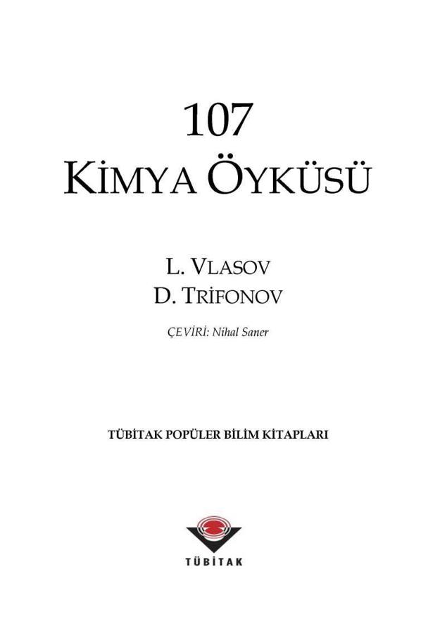

Yüz yıl kadar önce bir bilim adamı kimyadaki tüm buluşlarla ilerlemeleri ve bilinen bileşiklerin özelliklerini anlatan bir kitap yazmayı düşünebilirdi. Ancak yüz yıl önce bile kimya bilimi o kadar hızlı ilerliyordu ki, yazar adayının meslektaşlarından en az bir yıl araştırmayı bırakmalarını istemesi gerekirdi. Yoksa, tüm yeni buluşları ve kuramları aynı anda izlemesi imkansız olurdu.
Bu yazar, kimya biliminin ufkunun sınırsız olduğu günümüzde ne yapardı acaba? Bu kitabın yazarları, kimyanın en önemli ve ilginç sorunlarına değinmeye çalışmışlardır.
Kitapta Periyodik Çizelge'nin yapısı tanıtılmakta ve anlatılmaktadır. Okurken kendinizi ilginç örneklerle dolu bir tür kimya müzesinde bulacaksınız. Kimyacıların, element içindeki tek bir atomla bile çalışmayı nasıl öğrendiklerini görecek ve ürettikleri karmaşık maddeleri tanıyacaksınız.
Kimyanın rol oynadığı çeşitli meslek dallarıyla tanışacak ve insan etkinliğinin olduğu her yere kimyanın nasıl girdiğini anlayacaksınız.
Kimyanın heyecan verici keşiflerinin bu kısa ama öğretici öykülerini okurken, büyüleyici bir bilim dalı olan kimyayı daha yakından tanıyacağınızı ve bundan böyle ona daha fazla önem vereceğinizi umuyoruz.
TÜBİTAK POPÜLER BILIM KİTAPLARI SERISI
İçindekiler
Önsöz Yerine
I. Büyük Ev'in Sakinleri
1. Periyodik Sistemin Kuşbakışı Görünüşü
2. Uzaybilimciler, Kimyacıları Elegeçmez Birşeyin Peşinden Koşmaya Nasıl Yönelttiler ?
3. İki Yüzlü Bir Element
4. İlk ve En Şaşırtıcı Olan
5. Yeryüzünde Kaç Tane Hidrojen Vardır ?
6. Kimya = Fizik + Matematik
7. Biraz Daha Matematik
8. Kimyacılar Beklenmeyenle Nasıl Karşılaştı ?
9. Avutmayan Bir Çözüm
10. "Çılgın" Bir Düşüncenin Araştırılması ya da Asal Gazların Asal Olmaktan Vazgeçişleri
11. Bir Başka Belirsizlik mi ?
12. Obur
13. Henning Brand'ın "Filozof Taşı"
14. Temizlik Kokusu ya da Niceliğin Niteliğe Dönüşümü
15. Çok Basit, Hem de Çok Mükemmel
16. Küçük Soğuk Irmakta Buz Henüz Donmamış...
17. Yeryüzünde Kaç Tane Su Var ?
18. Yaşam Suyu, Can Veren, Her Yerde Hazır Olan Su
19. Buz Saçağının Sırları
20. Biraz Dilbilim ya ya Çok Farklı İki Olgu
21. Niçin Çok Farklı İki Olgu ?
22. İki "Niçin?" Daha
23. Tutarsızlıklar
24. Mimaride Özgünlük
25. Ondördüzler
26. Metal Dünyası ve Çelişkileri
27. Sıvı Metaller ve Bir Gaz (?) Metal
28. Olağandışı Bileşikler
29. Kimyada ilk "Elektronik Bilgisayar"
30. Elektronik Bilgisayarda Bir Pürüz
31. Bir Element Diğerine Nasıl Dönüşür?
32. Elementler Dünyasında Ölümlülük ve Ölümsüzlük
33. Bir, İki, Üç, Pek Çok...
34. Doğa Adil midir?
35. Sahte Güneşlerin İzinde
36. Yüzdörtten Birinin Yazgısı
37. Uranyum, Senin Yerin Neresi?
38. Arkeolojiden Küçük Öyküler
39. Uranyum ve Uzmanlıkları
40. Tamamlanmamış Bir Bina mı?
41. Modern Simyacılara Bir ilahi
42. Bilinmeyenin Uçurumunda
43. Element Kütüğü
II. Kuyruğu Ağzında Bir Yılan
44. Kimya Biliminin Ruhu
45. Yıldırım ve Kaplumbağalar
46. Büyülü Engel
47. Kuyruğu Ağzında Bir Yılan
48. Bir Kaplumbağanın Yıldırım Gibi Gitmesi ya da Tersi Nasıl Sağlanır?
49. Zincir Tepkimeler
50. Kimya Elektrikle Nasıl Arkadaş Oldu ?
51. Bir Numaralı Düşman
52. Ve Onunla Nasıl Savaşılır?
53. Parlak Bir Jet
54. Bir Kimyacı: Güneş
55. İki Tür Kimyasal Engel
56. Kimya ve Radyasyon
57. En Uzun Tepkime
III. Kimya Müzesi
58. Yanıtsız Bir Soru
59. Çeşitliliğin Nedenleri ve Sonuçları
60. Kimyasal Halkalar
61. Üçüncü Bir Olasılık
62. Kompleks Bileşikler Hakkında Birkaç Söz
63. Basit Bir Bileşikteki Sürpriz
64. Humphry Davy'nin Bilmediği Neydi ?
65. 26, 28 ya da Oldukça Dikkat Çekici Birşey
66. Cadet'in Sıvısına Övgü
67. TEK'in Öyküsü
68. Tuhaf Sandviçler
69. Karbon Monoksidin İlginç Bileşikleri
70. Kırmızı ve Yeşil
71. Hepsi Birinin içinde
72. En Olağanüstü Atom, En Olağanüstü Kimya
73. Yine Elmas
74. Ayağımızın Altındaki Bilinmeyen
75. Aynılar Tümüyle Aynı Olmadığında
IV. Onun Gözüyle
76. Analizin Yararı Üzerine Birkaç Söz
77. İyi Kalitede Barut Yapmak
78. Germanyum Nasıl Bulundu ?
79. Işık ve Renk
80. Güneşin Kimyasal Analizi
81. Dalgalar ve Madde
82. Bu işi Yapan Bir Damla Civadır
83. Kimyasal Bir Prizma
84. Prometyum Nasıl Bulundu ?
85. Yaban Çileklerinin Nefis Kokusu
86. Napoleon'un Ölümü : Söylenti ve Gerçek
87. Aktivasyon Analizi
88. Tartıya Gelmeyen Nasıl Tartılır ?
89. Tek Atomların Kimyası
90. Bir Sınır Var mı?
91. Şaşırtıcı Bir Sayı
V. Kimya Yayılıyor
92. Bir Kez Daha Elmas
93. Sonsuz Moleküller
94. Delinmez Bir Yürek ve Gergedan Derisi
95. Karbon ve Silisyumun Beraberliği
96. Harika Elekler
97. Kimyasal Kıskaçlar
98. Beyaz Gömlekli Kimya
99. Küften Bir Mucize
100. Bitki Vitaminleri: Mikroelementler
101. Bitkiler Ne Yer ve Kimyanın Konuyla İlgisi Nedir?
102. Ufak Bir Benzerlik ya da Kimyacılar Bitkiyi Potasyumla Nasıl Besler?
103. Azot Krizi
104. Fosfor Ne İçin Gereklidir?
105. Kimyasal Savaş
106. Çiftçinin Yardımcıları
107. Hizmet Eden Hayaletler
Birkaç Özür Sözcüğü
ÖNSÖZ YERİNE
Bir zamanlar doğuda çok akıllı ve bilgili bir hükümdar varmış. Bu hükümdar yeryüzünde yaşayan insanlara ilişkin her şeyi bilmek istiyormuş.
Vezirlerini yanına çağırmış:
"Bana dünyadaki tüm ulusların tarihini yazın, geçmişte ve şimdi nasıl yaşadıklarını, neler yaptıklarını, hangi savaşlara katıldıklarını ve çeşitli ülkelerde gelişmiş iş ve sanat kollarını anlatın!"
diye buyurmuş.
Ve onlara beş yıl süre tanımış.
Vezirler önünde saygıyla eğilmişler.
Sonra krallıktaki akıllı adamların en akıllılarını bir araya toplamışlar ve hükümdarlarının dileğini iletmişler. Bu olayın parşömen endüstrisinde eşi görülmemiş bir patlamaya neden olduğu söylenir.
Beş yıl sonra vezirler sarayda tekrar toplanmışlar.
"Büyük hükümdarım, dileğiniz yerine getirildi! Dışarıya bakarsanız isteğinizin karşılandığını görürsünüz... " demişler.
Hükümdar hayretle gözlerini açmış. Sarayın önünde sonu ufukta kaybolan bir deve kervanı duruyormuş. Her devenin sırtında iki dev heybe ve her heybenin içinde de marokenle güzelce kaplanmış on büyük cilt varmış.
"Bu nedir?" diye sormuş hükümdar.
"Bu dünya tarihidir." diye yanıtlamış vezirler.
"Buyruğunuz üstüne bilge kişiler beş yıl durmadan çalıştılar!"
"Benimle alay mı ediyorsunuz?"
diye kükremiş kral.
"Ömrüm bunların onda birini bile okumaya yetmez! Söyleyin kısa bir tarih yazsınlar. Ama tüm önemli olayları içersin."
Ve onlara bir yıl daha süre vermiş.
Bir yıl geçmiş ve yine kervan sarayın önünde durmuş. Bu kez yalnızca on deve boyundaymış ve her devenin sırtında iki heybe, bunların içinde de on cilt kitap varmış.
Kral çok öfkelenmiş.
"Bugüne kadar tüm ulusların yaşadığı yalnızca en önemli olayları yazmalarını söyleyin onlara. Ne kadar süre ister?"
Akıllı adamların en akıllısı öne çıkmış ve
"Yarın efendim, isteğinize yarın kavuşacaksınız." demiş.
"Yarın?" diye yinelemiş hükümdar şaşkınlıkla."
"Çok iyi. Ama beni aldatıyorsanız başınızı yitireceksiniz!"
...Sonunda mavi gökyüzünde güneş yükselmiş, uyku çiçekleri tüm büyüleyicilikleriyle açmışlar ve hükümdar bilge kişiyi yanına çağırtmış.
Yaşlı bilge elinde ufacık bir tahta kutuyla içeri girmiş.
"Ey ulu hükümdarım, tüm insanlık tarihinde yaşanmış en önemli olayları burada bulacaksınız." demiş kısık bir sesle.
Kral kutuyu açmış. Kadife bir yastık üstünde küçük bir parça parşömen duruyormuş. Ve orada tek bir cümle yazılıymış:
"Doğdular, yaşadılar ve öldüler."
Bu eski masal böylece sürer gider. Biz kimyaya ilişkin eğlenceli bir kitap yazmak istediğimizde ve bir kitabın sayfalarının sınırlı olacağını düşündüğümüzde bu masalı anımsamadan geçemedik. Biz de yalnızca önemli şeyleri yazmalıydık. Ancak kimyada en önemli olaylar nelerdi?
"Kimya, maddelerin ve onların dönüşümünün bilimidir."
Tahta kutudaki parşömen parçasını anımsadık diye bizi suçlayabilir misiniz?
Kafalarımızı zorladık, çok düşündük ve kimyada herşeyin önemli olduğuna karar verdik. Bir kişiye daha önemli görünen, bir başkasına daha az önemli gelebilir. Örneğin, anorganik kimyacı anorganik kimyayı evrenin merkezi varsayarken, organik kimyacı da pek doğal ki karşı görüşte olacaktır. Bu noktada bir görüş birliği olamaz.
Uygarlık sayısız parçanın bir bütünüdür. Ve bunların en önemlilerinden biri de kimyadır.
İnsanlar kimya sayesinde metalleri filizlerinden ve minerallerinden ayırabilirler. Kimya olmaksızın çağdaş metalürji kurulamazdı.
Kimya, hayvansal, bitkisel ve mineral kaynakları kullanarak giderek daha harikulade maddeler yapmaktadır. Kimya basit bir biçimde doğayı kopya veya taklit etmemekte ama yıldan yıla giderek daha farklı yollardan onu aşmaktadır.
İnsan yaşamında ve çalışmasında çok önemli ve yararlı rolleri olan ve doğada bulunmayan binlerce madde kimya tarafından üretilmiştir.
Kimyanın başardığı işler saymakla tükenecek gibi değildir.
Yaşam sürecinin her aşamasında sınırsız sayıda kimyasal işlem yer alır. Kimya yasalarını bilmeden yaşam faaliyetlerinin temellerini kavramak olası değildir.
Kimya, insanlığın evrimini elinde tutmuştur denilebilir.
Kimya bizi doyurur, giydirir, çağdaş ve uygar bir toplumun gereği olan şeyleri sağlar.
Uzay boşluğuna roketler atılıyor. Motorları için gerekli yakıtı, tasarımları için ısıya dayanıklı maddeleri kimya buluyor.
Herhangi bir kişi tüm yönleri ve tüm büyüleyiciliğiyle kimyayı yazmaya çalışsa, çok gelişmiş bir devletin bile kağıt kaynaklan tükenme tehlikesiyle karşılaşacaktır. Neyse ki hiç kimsenin aklına şimdilik böyle bir düşünce gelmemiştir; bizim yapmayı düşündüğümüzün dışında tabii...
İçinde bulunduğumuz çıkmaza bir çözüm yolu bulduk. Birçok farklı olguyu azar azar yazmaya karar verdik. Doğal olarak hoşa gidecek şeyleri yazacaktık. Başka yazarların başka olayları anlatmaları olasıdır. Ancak bu bizim kitabımız ve kendi bulduğumuz bir yolla yazdık. Bu nedenle bilmek istediğiniz herşeyi içinde bulamazsanız lütfen bize kızmayın.
L. Vlasov D. Trifonov
I. BÜYÜK EV'İN SAKİNLERİ
1. PERİYODİK SİSTEM'İN KUŞBAKIŞI GÖRÜNÜŞÜ
İlk bakışın, ilk izlenimin genellikle fazla bir değeri yoktur. Gözlemci bazen kayıtsız kalırken, bazen de şaşkınlık duyabilir. O çok bilinen fıkra kahramanının hayvanat bahçesinde zürafayı gördüğünde "Bu gerçek olamaz!" dediği gibi arada sırada bir gözlemcinin de hayrete düştüğü olur.
Ancak, bir şey ile ya da bir olgu ile ilk kez tanışıyor olsanız bile, ona şöyle bir kuş bakışı bakmak çoğunlukla yarar sağlar.
Mendeleyev'in "Elementlerin Periyodik Sistem'i"ne bir şey ya da bir olgu demek pek mümkün değildir. O, daha çok doğanın en büyük yasalarından birinin, "Periyodik Yasa'"nın esaslarını yansıtan bir tür aynadır.
Bu sistem, yeryüzünde bulunan ya da insanoğlu tarafından yapay olarak üretilmiş yüz küsur kimyasal elementin davranış kurallarının kodlanmış bir şekli, elementlerin "Büyük Ev"ini yöneten bir kurallar bütünüdür.
Bu eve bir göz attığımızda bir çok şey açıklığa kavuşur. İlk duygu bir tür şaşkınlık; büyük uzun binaların ortasında aniden acayip ama zarif bir mimariye sahip bir ev gördüğümüzde hissettiklerimize benzer birşeydir.
Mendeleyev'in çizelgesinde şaşkınlık yaratan nedir?
Bu çizelgedeki periyotların ya da katların farklı planlanmış olması gerçeğiyle başlayalım.
Mendeleyev Çizelgesi'nin ilk katında1 ya da ilk periyodunda yalnızca iki oda ve ya kutu vardır.
İkinci ve üçüncü katların her birinde sekiz, bundan sonraki iki katta ise (dördüncü ve beşinci) tıpkı bir oteldeki gibi on sekiz oda vardır.
Alttaki ikisinde (altıncı ve yedinci) otuz ikişer oda bulunur. Böyle bir yapıyı daha önce hiç gördünüz mü?
"Periyodik Sistem" olarak bilinen kimyasal elementlerin Büyük Ev'inin şekli işte böyledir.
2. UZAYBİLİMCİLER KİMYACILARI ELEGEÇMEZ BİRŞEYİN PEŞİNDEN KOŞMAYA NASIL YÖNELTTİLER ?
Bu tasarım mimarinin gelip geçici bir hevesi miydi ? Asla ! Fizik yasalarına uymayan bir yapı tasarımı düşünülemez, aksi halde hafif bir rüzgarda bina başaşağı olur.
Periyodik Sistem'in mimarisinin dayandığı fizik yasaları o kadar katı ve kesindir ki Mendeleyev'in çizelgesindeki her bir periyodta yalnızca belirli sayıda element yer alabilir. Örneğin, ilk periyotta iki element vardır, ne bir eksik ne bir fazla.
Bu iddia fizikçilere aittir ve kimyacılar da tümüyle aynı görüşü paylaşırlar.
Ancak onların her zaman anlaşabildiklerini de söyleyemeyiz. Periyodik Yasa''nın henüz kendilerini rahatsız etmediği bir dönemde fizikçiler konu hakkında hiç bir şey söylemiyorlardı. Bu arada, hemen her yıl yeni elementler bulan kimyacılar yeni gelenleri nereye yerleştireceklerini bilememenin güçlüğünü giderek daha fazla hissediyorlardı. Çizelgede belli bir kutu için uzun bir istekli kuyruğu oluştuğunda çok can sıkıcı bir durum ortaya çıkıyordu.
Kuşku içinde olan bilim adamlarının sayısı hiç de az değildi. Ciddi bir şekilde, Mendeleyev Çizelgesi'nin kum üzerine inşa edildiğini söylüyorlardı. Bunlardan birisi de, arkadaşı Kirchhoffla birlikte spektroskopik araştırma yöntemini geliştirmiş olan Alman kimyacı Bunsen'di. Ancak sıra Periyodik Yasa''ya geldiğinde, Bunsen hayret verici bir bilimsel dargörüşlülük ortaya koyuyordu. "Birisi tıpkı borsa bülteni hazırlar gibi kurallar ortaya atmış" diyerek hiddetle saldırıyordu.
Mendeleyev'den önce de, o sıralarda bilinen altmış kadar kimyasal elementi belirli bir düzende yerleştirme çabaları sürmekteydi. Ancak başarılı bir sonuç elde edilememişti. İngiliz Newlands gerçeğe çok yaklaşmıştı. Bir "Oktavlar Yasası" öneriyordu. Newlands elementleri atom ağırlıklarına göre artan bir sırada düzenlerken, müzikte her sekizinci notanın birinciyi daha yüksek bir seviyede tekrarlaması gibi, her bir sekizinci elementin özelliklerinin birinci elementinkilere benzediğini gördü. Ancak Newlands'in buluşuna karşı tepki "Niçin elementleri alfabetik sırada düzenlemiyorsun? Bu yolla da bir düzenlilik gözleyebilirsin!" şeklinde dile getiriliyordu.
Zavallı Newlands alaycı hasımlarına ne yanıt verebilirdi ki ? Mendeleyev Çizelgesi'nin de başlangıçta fazla bir şansı yoktu. "Mimarisi" şiddetli bir saldırıya uğramıştı. İçinde, belirsiz ve açıklanması gereken çok şey vardı. Yarım düzine yeni element keşfetmek, bunlara çizelgede uygun yer bulmaktan daha kolaydı.
Yalnızca birinci katta yapılan işler yeterli gibi görünüyordu. Bu kata beklenmedik bir konuk akınının olma tehlikesi yoktu. Bu kata şimdi Hidrojen ve Helyum yerleşmiş durumdadır. Hidrojen atomunun çekirdek yükü +1 ve helyum atomununki +2'dir. Açıktır ki bunların arasında başka bir element yoktur ve olamazda. Bildiğimiz kadarıyla doğada yükleri kesirli bir sayı olan hiçbir çekirdek ya da tanecik yoktur.
3. İKİ YÜZLÜ BİR ELEMENT
Okulda bir kimya dersinde buna benzer bir diyalogla karşılaşmış olabilirsiniz.
Öğretmen:
"Hidrojen Periyodik Çizelge'nin hangi grubunda yer alır?"
Öğrenci:
"Birincide. Çünkü hidrojen atomunun yalnızca tek bir elektron kabuğu vardır ve tıpkı bu grupta yer alan alkali metaller lityum, sodyum, potasyum, rubidyum, sezyum, fransiyum gibi bu kabukta tek bir elektron bulunur. Hidrojen tıpkı onlar gibi, kimyasal bileşiklerinde artı bir yük taşır. Sonuçta hidrojen, bazı metallerin tuzlarından ayrılmasını sağlayabilir." diye yanıtlar.
Bu doğru mudur? Evet, ancak yarı yarıya doğrudur.
Kimya somut bir bilimdir ve kimyacılar yarı doğrulardan hiç hoşlanmazlar. Hidrojen bunu kanıtlayan bir örnektir.
Hidrojen ile alkali metallerinin ortak noktası nedir?
Yalnızca +1 yüklü oluşları. Yalnızca dış elektron kabuklanın benzer bir düzen içinde oluşu. Bunun dışında hiç bir benzerlik göstermezler. Hidrojen gaz halinde bulunur ve bir ametaldir. Ayrıca hidrojen iki atomlu bir moleküldür, ilk grubun diğer elementleri ise metaldir ve bir kimyasal tepkimede yer alabilen en aktif metaller onlardır. Hidrojen biricik elektronunu vererek bir alkali metal kılığına girmeye çalışır. Ancak gerçekte kuzu postuna bürünmüş bir kurt gibidir.
Periyodik Sistem'in grup ve alt gruplarını oluşturmak üzere aynı soydan elementler Büyük Ev'de üst üste yerleştirilmişlerdir. Bu yasa Büyük Ev'in tüm sakinleri için geçerlidir. Birinci grupta yer almakla hidrojen bu yasayı kaçınılmaz olarak çiğnemektedir.
Ancak, zavallı hidrojen nereye gidebilirdi ki?
Hepsi hepsi dokuz grup, dokuz basamak vardı Büyük Ev'de. Hidrojenin kapı komşusu olan Helyum Sıfırıncı Grup olarak adlandırılan grupta kendine yer bulabildi. Geri kalan gruplardaki yerler boştu.
Bakalım, birinci katta hidrojene gerçekten "güneşli bir oda" bulabilmek için ne kadar yeniden düzenleme olanağı vardı!
Berilyumla başlayan toprak alkali metallerin bulunduğu ikinci grupta onu misafir etmek olanaksız mıydı?
Hayır, onlar hidrojene kesinlikle yakınlık duymuyorlardı. Üçüncü, dördüncü, beşinci ve altıncı gruplar da onunla birlikte olmayı reddediyorlardı.
Peki ya yedinci grup? Durun!
Flor, klor, brom ve diğer halojenleri içeren bu grup, hidrojene dostça el uzatmaya hazır görünüyor.
İki çocuğun karşılaşmasını gözünüzde canlandırın :
"Kaç yaşındasın?"
"Çok fazla"
"Bende."
"Benim bisikletim var!"
"Benim de!"
"Senin baban ne iş yapıyor?"
"Kamyon şoförü!"
"Hey! Benimki de!"
"Haydi arkadaş olalım mı?"
"Haydi!"
Flor, hidrojene sorar: "Ametal misin?"
"Evet!"
"Gaz mısın?" ,"Evet, öyle.","Biz de," der flor, kloru da katarak.
Hidrojen, "Benim molekülüm iki atomdan oluşur!" diye söze karışır.
"Bak sen, daha neler!" der flor şaşkınlık içinde.
"Tıpkı bizim gibi!" "Dışardan elektron aldığında eksi değerlik gösterir misin? Biz bu işi yapmaktan çok hoşlanırız!" "Tabii ben de. Bana hiç benzemeyen alkali metalleri ile hidridler olarak bilinen hidrojen bileşiklerini oluştururum. Ve bu bileşiklerde değerliğim eksi birdir."
"Pekala, o halde bizimle kalabilirsin. Haydi arkadaş olalım!"
Ve böylece hidrojen yedinci gruptaki yerini alır. Ancak bu uzun sürmez.
Hidrojenin yeni ilişkisini öğrenen biraz daha iyi bir halojen düş kırıklığı içinde şöyle söyler:
"Bak kardeşim, senin dış kabuğunda fazla elektronun yokmuş gibi görünüyor, öyle değil mi? Gerçeği söylemek gerekirse yalnızca bir tane! Sen birinci grupta toplananlara benziyorsun. Alkali metallerin yanına dönsen daha iyi olmaz mı?"
Hidrojenin içine düştüğü durumun güçlüğünü düşünün: Pek çok oda var olduğu halde tüm haklarını kullanarak hiç birinde kalıcı olamıyor.
Ama niçin? Hidrojenin bu şaşırtıcı iki yüzlülüğünün nedeni nedir? Hidrojeni böyle garip davranmaya iten nedir?
Herhangi bir kimyasal elementin kendine özgü özellikleri diğer elementlerle birleştiğinde sıradan hale gelir. Bu arada dış kabuğundan elektron verir ya da alır. Bir element dıştaki elektronlarının tümünü verse de diğer kabukları genellikle değişmeden kalır.
Bu durum hidrojen dışındaki tüm elementler için geçerlidir. Hidrojen tek elektronunu verdiğinde geriye yalnızca atom çekirdeği kalır. Yani geriye kalan hidrojen atomunun çekirdeğini oluşturan tek bir protondur (Gerçekte çekirdek her zaman yalnızca tek bir proton içermez, ancak bu önemli noktaya daha sonra değineceğiz).
Böylece, hidrojenin kimyası kendine özgü bir kimya olmaktadır.
Bu da elementer bir taneciğin, protonun kimyasıdır. Bu nedenle hidrojenin yer aldığı tepkimeler protonların etkisi altında oluşur. Ve hidrojenin birbirini tutmayan davranışlarının nedeni de budur.
4. İLK VE EN ŞAŞIRTICI OLAN
Hidrojen, ünlü İngiliz fizikçi saygıdeğer Henry Cavendish tarafından bulunmuştur. Çağdaşlarından birisinin de söylediği gibi, o bilgililerin en zengini ve zenginlerin de en bilgilisiydi.
Bilginlerin en titizi olduğunu da eklememiz gerekir. Cavendish'in kendi kitaplığından bir kitap alırken bile daima kitap kartına ismini yazdığı söylenir. Kendisini tümü ile bilimsel araştırmalara adamış, kendi bilim dalında daima çok büyük bir yer tutmuş olan bu titiz bilim adamı içine kapanık garip yaşantısı ile ün yapmıştı. Ancak, onun hidrojen gazını bulmasını sağlayan tam da bu özellikleriydi. Ve inanın, bu hiç de kolay bir iş değildi!
Buluşunu 1766'da yapmıştı ve 1783'de Fransız Profesör Charles ilk hidrojen balonunu uçurdu. Hidrojen gazı kimyacılar açısından da çok değerli bir buluştu. Kimyasal bileşiklerin en önemlilerinden olan asid ve bazların iç yüzünün kavranmasında hidrojen yardımcı oldu. Metal oksidlerinin indergenmesinde ve tuz çözeltilerinden metallerin çöktürülmesinde vazgeçilmez bir laboratuvar ayracı haline geldi ve mantıksız gibi görünse de, hidrojen gazı 1766'da değil hemen hemen yarım yüzyıl sonra farkedildi (Böyle birşey gerçekten oldu). Bu nedenle hem kuram hem de uygulama bakımından kimyanın gelişmesi uzun bir süre gecikmişti.
Kimyacılar hidrojeni yeteri kadar tanıdıklarında ve uygulamacılar önemli maddelerin üretiminde hidrojeni kullanmaya başladıktan sonra, bu gaz fizikçilerin dikkatini çekti. Ardından da fizikçiler bilimi bir kaç kat zenginleştiren önemli sonuçlara ulaştılar.
Daha fazla kanıt ister misiniz? Birincisi, hidrojen, diğer tüm sıvılardan ve (helyum dışında) tüm gazlardan daha düşük bir sıcaklıkta eksi 259.1° Celsius'da katılaşır.
İkincisi, Periyodik Yasa'nın fiziksel gücünün henüz anlaşılamadığı bir dönemde, Danimarkalı fizikçi Niels Bohr atom çekirdeği etrafında elektron dağılımı kuramını hidrojen atomu sayesinde inceleyebilmiş ve bu bulgular diğer çok önemli buluşların da temelini oluşturmuştur.
Daha sonra fizikçiler görevi meslek akrabaları olan astrofizikçilere devrettiler.
Astrofizikçiler yıldızların bileşim ve yapısını inceliyorlar ve hidrojenin evrenin bir numaralı elementi olduğunu söylüyorlardı. Güneşin, yıldızların, yıldız kümelerinin ana bileşeni ve gezegenlerarası boşluğun temel "doldurucusuydu".
Uzayda kimyasal elementlerin tümünden daha fazla hidrojen vardı. Hiç bir şey miktarının yüzde birden az olduğu yeryüzündeki duruma benzemiyordu.
Bilim adamları, hidrojeni atom çekirdeklerinin dönüşümünden oluşan uzun trenin, istisnasız tüm atomların, tüm kimyasal elementlerin oluşumuyla son bulan trenin başlangıç noktası olarak kabul ederler.
Güneşimiz ve tüm yıldızlar çok parlaktır, çünkü çekirdeklerinde ısıl tepkimeler olmaktadır. Tepkime sırasında hidrojen helyuma dönüşmekte ve çok büyük bir enerji açığa çıkmaktadır. Yeryüzünün tanınmış kimyacısı hidrojen, uzay boşluğunda daha da ünlüdür.
Hidrojen atomunun diğer bir belirgin özelliği de, dalgaboyu 21 santimetre olan radyasyonlar yaymasıdır. Bu uzunluk tüm evrende aynı olduğu için evrensel sabit adını alır ve bilim adamları, diğer dünyalarla radyo iletişimi kurma çalışmalarında hidrojen dalgasını kullanırlar.
Eğer o dünyalarda zeki yaratıklar yaşıyorsa 21 santimetre dalga boyunun ne anlama geldiğini bilmeleri gerekmektedir.
5. YERYÜZÜNDE KAÇ TANE HİDROJEN VARDIR ?
Bir bilim adamı için Nobel Ödülü ödüllerin en büyüğüdür. Dünyadaki sayısız bilim adamından yalnızca yüz kadarı Nobel Ödülü almıştır. Bu ödül onlara ünlüden de ünlü buluşları için verilmiştir.
1932'de Nobel Ödülünü alanlardan üçü Murphy, Urey ve Brickwedde idi.
Önceleri yeryüzünde yalnızca atom ağırlığı bire eşit tek bir hidrojenin var olduğu düşünülüyordu. Murphy ve çalışma arkadaşları iki kat daha ağır ikinci bir hidrojen buldular. Bu, atom ağırlığı iki olan bir hidrojen izotopuydu. İzotoplar bir atomun aynı yüklü ama farklı atom ağırlıklarında çeşitleridir. Bir başka deyişle, izotop atomların çekirdeğinde eşit sayıda proton, farklı sayıda nötron bulunur.
Tüm kimyasal elementlerin izotopları vardır: Bunlardan bazıları doğada bulunurken, diğerleri nükleer tepkimeler yolu ile yapay olarak elde edilebilmektedir.
Çekirdeği tek bir protondan oluşan hidrojen izotopuna protiyum adı verilir ve H1 simgesi ile gösterilir. Hiç nötronu olmayan tek atom çekirdeği de budur. (Hidrojenin eşsiz bir özelliği daha!)
Bu tek protona bir nötron ekleyin, sonuçta döteryum (H2 ya da D2) adını alan ağır hidrojen izotopunun çekirdeği oluşur.
Doğada protiyum döteryumdan daha çoktur ve miktarı tüm hidrojenin yüzde 99'u kadardır.
Ancak hidrojenin üçüncü bir çeşidi daha vardır ki, tritiyum (H3 ya da T3) olarak bilinen bu atomun çekirdeğinde iki nötron yer alır.
Kozmik ışınların etkisi ile atmosferde sürekli oluşur. Oluşur ve oldukça hızlı bir şekilde tekrar kaybolur. Radyoaktiftir ve bozunurken bir helyum izotopuna (helyum-3) dönüşür.
Tritiyum çok ender bulunan bir elementtir: Tüm yeryüzü atmosferinde yalnızca 6 gram kadar vardır. Her on santimetre küp havada yalnızca tek bir tritiyum atomu bulunur.
Son yıllarda hidrojenin daha ağır izotopları H4 ve H5 yapay olarak elde ediliyorsa da, bunlar çok kararsızdırlar.
İzotoplarının var oluşu hidrojeni diğer kimyasal elementlerden ayıran bir özellik değildir. Ayrıcalık yaratan hidrojen izotoplarının özelliklerinin -esas olarak da fiziksel özelliklerinin- birbirinden çok farklı oluşudur.
Diğer elementlerin izotopları ise birbirinden hemen hemen farksızdır.
Hidrojenin her bir çeşidi kendisine özgü bir kişiliğe sahiptir ve kimyasal tepkimelerde farklı bir davranış gösterir.
Örneğin, protiyum döteryumdan daha aktifttir.
Hidrojen izotoplarının davranışını incelerken, bilim adamları izotop kimyası olarak bilinen yeni bir bilim dalı geliştirdiler.
Bizim tanıdığımız kimyada elementler tüm izotopları ile birlikte bir bütün olarak ele alınır. İzotop kimyası ise ayrı ayrı izotoplarla ilgilenir. Bu sayede araştırmacılar çeşitli kimyasal işlemlerin en karışık ayrıntılarını çözümleyebilmişlerdir.
6. KİMYA = FİZİK + MATEMATİK
Bir inşaatçının binayı dikip, çatısını kapattıktan sonra tasarımcılardan herşeyin doğru yapılıp yapılmadığını hesaplamalarını istediğini bir düşünün!
"Aynanın İçinden" adlı tiyatro oyunundan alınmış bir bölümü andırıyor değil mi?
Elementlerin Periyodik Sistem'i de tam böyle bir olay ile karşılaşmıştır.
Önce Büyük Ev yapılmış ve her element kendine ait odaya yerleştirilmişti, Mendeleyev Çizelgesi kimyacıların gereçlerinden biri haline gelmişti.
Ancak kimyacılar, element özelliklerinin niçin kendilerini periyodik olarak yinelediğini uzun süre açıklayamadılar.
Açıklama fizikçilerden geldi. Periyodik Sistem' binasının yapıca ne kadar dayanma gücü olduğunu hesapladılar. Bulguları dikkate değerdi. Yapının, "kimyasal mekaniğin" tüm yasalarıyla uyum içinde mutlak bir doğrulukla yapıldığım gördüler.
Bu durumda, Mendeleyev'in gerçekten büyük önsezisine ve derin kimya bilgisine hayran olmaktan başka yapılacak bir iş kalmamıştı. Fizikçiler, atomun yapısını ayrıntılarıyla incelemeye başladılar.
Bir atomun kalbi çekirdeğidir. Çevresinde dönen elektronların sayısı çekirdek içindeki artı yüklerin sayısına eşittir. Hidrojenin bir, magnezyumun on iki, uranyumun doksan iki elektronu vardır.
Bunlar nasıl dönerler? Işık pervaneleri gibi karmakarışık mı ya da belirli bir düzen içinde mi?
Bilim adamları bu soruyu yanıtlamak için yeni fizik kuramlarına başvurmak ve yeni matematiksel yöntemler geliştirmek zorundaydılar.
Tam bu noktada, elektronların çekirdeğin çevresinde tıpkı güneşin etrafındaki gezegenler gibi belirli yörüngelerde döndüğünü fark ettiler.
"Her bir yörüngede kaç elektron vardır? Gelişigüzel bir sayı mı, yoksa sınırlı mı?" diye soruyordu kimyacılar.
Fizikçiler "Kesinlikle sınırlı sayıda!" yanıtını veriyorlardı. "Tüm elektron kabuklarının kapasitesi sonludur!"
Elektron kabukları için fizikçiler kendi simgelerini kullanırlar. Bunlar K, L, M, N, O, P ve Q harflerinden oluşur. Bu harfler elektron kabuklarının çekirdeğe göre en içten dışa doğru sıralanışı ile aynı düzendedir.
Fizikçiler matematikçilerle birlikte çalışarak her bir yörüngede kaç tane elektron bulunduğunu gösteren ayrıntılı bir şema yaptılar.
K- kabuğunda 2 tane elektron vardır ve daha fazla olamaz. Bunların ilki hidrojen atomunda, ikincisi helyum atomunda ortaya çıkar. Mendeleyev Çizelgesi'nin birinci periyodunun yalnızca iki elementten oluşmasının nedeni de budur.
L-kabuğu 8 elektron taşıyabilir. Bu kabuğa ilişkin birinci elektronu lityum atomunda, sonuncuyu ise neon atomunda gözleriz. Lityumdan neona kadar uzanan elementler Mendeleyev Sisteminin ikinci periyodunu oluşturur.
Diğer kabukların kaçar elektronu vardır acaba ? M-kabuğul8, N-kabuğu 32, O-kabuğu 50, P-kabuğu 72 vs. elektron taşıyabilir.
Eğer iki elementin en dış elektron kabukları özdeş bir biçimde düzenlenmişse, bu elementler benzer özellikler gösterir. En dış kabuklarında tek bir elektron bulunan lityum ve sodyum örnek verilebilir. Her iki element de Periyodik Sistem'in aynı grubunda yani birinci grubunda yer alır. Bir gruptaki elementlerin değerlik elektronları sayısının grup numarasına eşit olduğu görülmektedir.
Özetlersek: Özdeş yapıların dış elektron kabukları periyodik olarak yinelenir. Element özelliklerinin periyodik yinelenmesinin nedeni de budur.
7. BİRAZ DAHA MATEMATİK
Her şeyin bir mantığı vardır. En anlaşılmaz olayların bile bir mantığı bulunur. Başlangıçta farkına varılmayan tutarsızlıklar daha sonra ortaya çıkar . Herhangi bir kuram ya da önerme için tutarsızlıklar çok tatsız şeylerdir. Sonunda, ya kuramdaki yanlışlık düzeltilir ya da daha derin düşünmeye başlanır. Bu tür düşüncelerle de çoğunlukla anlamsızlığın derinliklerinde yol alınır.
Şimdi bu tür bir tutarsızlık örneğini anlatacağız. Periyodik Çizelge'nin yalnızca ilk iki periyodunda eşitlik hüküm sürmektedir.
Bu periyodların her birinde, onlara karşı gelen dış kabuk kaç elektron bulunduruyorsa o kadar da element vardır.
Buna göre, birinci periyod elementleri hidrojen ve helyumun atomlarında K- kabuğu dolar.
Bu kabukta iki elektrondan fazlası yer alamaz ve buna bağlı olarak ilk periyotta yalnızca iki element bulunur.
Lityumdan neona ikinci periyodun elementlerinin atomları sekiz elektron (oktet) kabuğunu tümü ile doldururlar, ikinci periyotta sekiz element bulunmasının nedeni budur.
Bundan sonra işler daha karmaşık bir hal alır.
Sıradaki periyodların elementlerini sayalım.
Üçüncüde 8, dördüncüde 18, beşincide 18, altıncıda 32 tane element vardır. Yedincide de 32 tane olması gerekir (ancak henüz tamamlanmamıştır).
Acaba bunlara karşılık gelen elektron kabuklan ne durumdadır? Burada sayılar farklıdır: 18, 32, 50 ve 72 ...
Şimdi, Periyodik Çizelge'nin yapısını açıklarken fizikçilerin onun kuruluşunda hiç hata bulamadıklarını söylemekle aceleci davranmış olmuyor muyuz ?
Eğer belirli bir elektron kabuğu Büyük Ev'in her bir katındaki sakinler tarafından düzenli olarak doldurulsaydı ve eğer her kat bir alkali metal ile başlayıp bir asal gaz ile son bulsaydı bu çok iyi bir şey olurdu. O zaman her periyodun kapasitesi bir elektron kabuğunun kapasitesine eşit olmuş olurdu.
Yazık ki, bu durumdan şartlı bir önerme şeklinde bahsetmek zorundayız: Eğer böyle olsaydı, eğer öyle olsaydı!
Gerçekte denge sağlanamamıştır.Mendeleyev Çizelgesi'nin üçüncü periyodu; üçüncü kabukta yani M-kabuğunda var olan elektronlardan daha az sayıda konuk ağırlar. Ve bu böylece gider.
Acıklı bir uyuşmazlık; ama bu uyuşmazlık Periyodik Sistem'in özüne ilişkin ipucunu elinde tutar.
Şimdi bakın: Üçüncü periyod argon ile son bulduğu halde, bu sonuncu elementin üçüncü M- kabuğu tamamlanmış değildir.
Tamamlanmış kabuk 18 elektron içermelidir; ama sadece 8 elektronu vardır.
Argon'u, dördüncü periyoda dahil olan potasyum izler. O, dördüncü katın ilk sakinidir.
Ama, son elektronunu üçüncü kabuğuna yerleştirmek yerine, onu dördüncüde N- kabuğunda bulundurmayı tercih eder. Bu raslantı değildir, çünkü fizikçiler tarafından yine katı bir düzenlilik getirilmiştir.
Basitçe, hiçbir atom dış kabuğunda 8 elektrondan fazlasına sahip olamaz. Sekiz dış elektronun bir arada bulunması çok kararlı bir düzendir.
Potasyumun kapı komşusu olan kalsiyuma katılan yeni elektron da en dış kabuğu doldurmayı "daha elverişli" bulur, çünkü bu durumda kalsiyum atomunun enerji miktarı başka herhangi bir elektron dağılımından daha küçüktür.
Ancak kalsiyumu izleyen skandiyumda atomun dış kabuğunu doldurmaya devam etme eğilimi son bulur.
Onun yeni elektronu tamamlanmamış ikinci - son M-kabuğuna "atlar". Ve bu kabuğun on boşluğu bulunduğundan (M-kabuğunun maksimum kapasitesinin 18 elektron olduğunu zaten biliyoruz), skandiyumdan çinkoya kadar olan on elementin atomları M-kabuklarını tek tek doldururlar.
Sonunda, çinkoda M-kabuğunun tüm elektronları yerine yerleşir. Bundan sonra N- kabuğu tekrar elektronları kabul etmeye başlar.Bu kabuk 8 elektrona sahip olur olmaz asal gaz kriptonu elde ederiz.
Rubidyumda eski hikaye kendini tekrarlar: Dördüncü tamamlanmadan, beşinci kabuk ortaya çıkar.
Dördüncü periyottan başlamak üzere Periyodik Çizelge'nin sakinleri için elektron kabuklarının böyle adım adım doldurulması "standart bir davranış"tır.
Bu, "Kimyasal Elementlerin Büyük Evi"nin temel, katı bir kuralıdır.
Bu nedenle Büyük Ev'de temel ve ikincil alt gruplar birbirinden ayrılır. En dış elektron kabuklarının doldurulmakta olduğu elementler ana alt grupları oluşturur. İçteki kabukların doldurulduğu elementler ikincil alt grupları meydana getirir.
Ancak dördüncü N-kabuğu tek bir adımda dolmaz. Onun tamamlanması Büyük Ev'in üç tam katı boyunca sürer. Bu kabuğun ilk elektronu daire 19'da oturan potasyumda görülür. Ama 32. elektron yalnızca, altıncı periyodun temsilcisi olan lutetiyumda ortaya çıkar. Onun atom numarası da 71'dir.
Gördüğünüz gibi, tutarsızlığın belirgin bir çizgisi vardır.
Bunu açıklamaya çalışırken fizikçiler ve biz, Periyodik Sistem'in yapısı hakkında daha derinlemesine bir görüş edinmişizdir.
8. KİMYACILAR BEKLENMEYENLE NASIL KARŞILAŞTI?
Herbert Wells'in Dünyaların Savaşı isimli "süslü" bilimkurgu romanını belki de okumuşsunuzdur. Romanda, Merih'den gelen casusların yeryüzünü istila edişleri anlatılır.
Son Merihli de öldürüldükten sonra yeryüzünde yaşam yeniden kurulur. Bilim adamları içine girdikleri şoktan kendilerini kurtarırlar ve komşu gezegenden gelen beklenmedik konuklardan geriye kalan çok az şeyi incelemek için acele ederler. Bu arada, Merihlilerin yeryüzündeki yaşamı yok etmek için kullandıkları gizemli kara tozla da ilgilenirler.
Korkunç patlamalarla son bulan pekçok başarısız denemeden sonra, bu talihsiz maddenin argon asal gazı ile bazı elementlerin oluşturduğu ve yeryüzünde henüz bilinmeyen bir bileşik olduğunu anlarlar. Ancak, büyük bir bilimkurgu yazarı kitabına son noktayı koyarken, kimyacılar argonun hiçbir koşul altında herhangi bir madde ile birleşemeyeceğinden kesinlikle emin görünüyorlardı. Yaptıkları çok fazla sayıda deneme onları bu sonuca ulaştırmıştır.
Argona asal gaz denmiştir. "Asal" sözcüğü Yunanca "etkin olmayan" anlamına gelmektedir. Argon, içinde helyum, neon, kripton, ksenon ve radon gazlarının da bulunduğu kimyasal tembeller grubunda yer alır.
Bu elementlerin değerlikleri sıfır olduğu için, Periyodik Sistem'de Sıfırına Grupta bulunurlar. Asal gaz atomlarının elektron alıp, verme yeteneği yoktur.
Kimyacılar onlan harekete geçirmek için neler yapmadılar ki! En inatçı metallerin kaynayan sıvılara dönüşeceği sıcaklıklara kadar ısıttılar; katılaşana kadar soğuttular; üzerlerine büyük bir elektrik akımı uyguladılar ve sonra onları en şiddetli kimyasal tepkenler ile etkileşime soktular. Ancak hepsi boştu! Diğer elementlerin kendilerini kimyasal birliğin kolları arasına çoktan bırakacakları bir noktada, asal gazlar heyecansız öylece duruyorlardı.
Araştırmacılara "zamanınızı boşa harcıyorsunuz," der gibiydiler. "Herhangi bir tepkimeye girme isteğinde değiliz. Biz onlardan üstünüz!" Ve bu kibirli tutumları sayesinde yeni bir isim kazanıp, "soy" gazlar unvanını alıyorlardı. Ancak, daha sonraları bu unvan onlarla alay edilmesine neden olacaktı.
Yeraltı minerallerinde helyum bulan Ramsay'ın övünmeye hakkı vardı. Dünya'ya gerçekten var olan yeni bir kimyasal element sunmuştu. Hem de ne kimyasal!
Helyum'dan, Periyodik Çizelge'nin diğer sakinlerine benzer bir davranış beklemesi, yani hidrojen, oksijen ve kükürt ile birleşmesini beklemek Sir William Ramsay'a çok pahalıya mal olacaktı. Saygıdeğer profesörler kürsülerinden helyumun oksidlerini ve tuzlarını anlatıyorlardı.
Ancak, asal gazlar grubunun birinci elementi Helyum Ramsay'ı yanılttı. Geçen yüzyılın sonunda ingiliz bilim adamları Ramsay ve Rayleigh neon, argon, kripton ve ksenonu buldular. Daha sonra kimyasal tembeller dizini radon ile kapandı. Bunların tümü kendilerine ait atom ağırlıkları olan birer elementti.
Ama doğrusunu söylemek gerekirse "element argon" gibi bir sözcüğün önüne "kimyasal" sözcüğünü koymak yine de çok güçtü.
Sonuçta bilim adamları bu kibirli soy gaz ailesini Mendeleyev Çizelgesi'nin bir kenarına ittiler. Çizelgeye yeni bir bölüm ekleyerek sıfırına grup adını verdiler. Kimya ders kitaplarına da orada bulunan kimyasal elementlerin hiçbir koşul altında bileşik oluşturamayacağını yazdılar.
Bu bilim adamlarına tam bir darbeydi: Onların tüm isteklerine karşın altı element kimyanın etki alanı dışında kalmıştı.
9. AVUTMAYAN BİR ÇÖZÜM
Başlangıçta Mendeleyev'in bile kafası karışmıştı. Hatta Argon'un hiç de yeni bir element olmadığı gibi "tutucu" bir fikri öne sürmek cesaretini de gösteriyordu. Argon molekülünün üç atomdan oluşan bir tür Azot Bileşiği N3 olduğunu söylüyordu. Tıpkı oksijen molekülü
O2 ile birlikte var olan ozon molekülü O3 gibi...
Ama sonunda gerçekler Mendeleyev'e hatasını kabul ettirdi ve Ramsay'ı doğruyu bulduğu için kutladı. Şimdi dünyadaki tüm ders kitaplarında ingiliz bilim adamından soy gazlar grubunun bulucusu olarak söz edilmekte ve hiç kimse bu gerçeği değiştirmeye çalışmamaktadır.
"Narodnaya Volya" grubunun üyesi olan N. Morozov, Schlus-Selburg Kalesi'nin zindanlarında yirmi yıl yattı.
Devrimden sonra, dünya çapında ünlü bir bilim adamı oldu.
Hücresinin aşılmaz duvarları onun bilimsel çalışma azmini yok edemedi. İnatçı çalışmaları bir dizi cesur, özgün görüşte ve iddiada somutlaşıyordu.
Morozov, hapishanede Periyodik Sistem'e ilişkin bir çalışma yaptı. Çalışmasında kimyasal etkinliği olmayan elementlerin varlığını öngörüyordu.
Morozov serbest bırakıldığında "Asal Gazlar" çoktan bulunmuş ve elementler çizelgesine yerleşmişlerdi. Morozov'un Mendeleyev ölmeden önce onunla görüştüğü ve iki büyük Rus'un Periyodik Yasa'yı uzun uzun konuştukları söylenir.
Bu söyleşinin içeriği ne yazık ki bilinmemektedir.
Soy gazların davranışmdaki gizem Mendeleyev'in ölümünden kısa bir süre sonra çözülmüştür.
Şöyle ki:
Fizikçiler eskiden olduğu gibi şimdi de kimyacıların yardımına koşarak, dış kabuğunda sekiz elektron bulunan bir yapının çok kararlı olduğunu saptadılar. Bundan daha kararlı bir elektron kabuğu olamazdı. Bu nedenle de elektron alıp, vermesi için hiçbir neden yoktu.
Böylece asal gazların "soyluluğunun" dış kabuklarındaki 8 elektrondan (ya da Helyum atomunda 2) kaynaklandığı anlaşıldı. Helyumun iki elektronlu kabuğu da kararlılıkta diğer kimyasal tembellerin sekizlilerinden daha geri kalmıyordu.
Kimyacıların gözünde bir şey daha açıklığa kavuşmuştu: Periyodik Çizelge'ye Sıfır Grubu'nun eklenmesi yalnızca bir zorunluluk değildi ,"Periyodik Sistem" onsuz tamamlanmamış bir yapıya benzeyecekti; çünkü çizelgedeki her periyod bir soy gaz ile son buluyor ,sonra komşu elektron kabuğu dolmaya başlıyor, böylece Büyük Ev'in yeni bir katı oluşuyordu.
Görüldüğü gibi sorun artık tümü ile basitleşmişti. Aristokrat unvanları bir yana bırakılacak olursa, soy gazlar uygulamada bir takım yetenekler gösterdi.
Örneğin Helyum, balonların doldurulmasında uygulama alanı buldu, dalgıçların vurgun belasından kurtulmasında yardımlarına koştu. Argon ve Neon ışıkları geceleri kent caddelerini süslemekte.
Ancak, "herşeye rağmen harekete geçmeleri" olası değil mi acaba? Belki, henüz fizikçilerin düşünmediği ya da hesaplamadığı bir şeyler vardır?
Belki de henüz kimyacılar maddeleri birbirleri ile tepkimeye sokmanın tüm yollarını denememişlerdir?
10. "ÇILGIN" BİR DÜŞÜNCENİN ARAŞTIRILMASI YA DA ASAL GAZLARIN ASAL OLMAKTAN VAZGEÇİŞLERİ
Antik çağın en büyük matematikçisi Eukleides (Öklid) "İki paralel doğru asla kesişmez!" diyordu. Rus bilim adamı Nikolai Lobachevsky geçen yüz yılın ortalarında "Hiç de değil, mutlaka kesişmeleri gerekir!" diye itiraz ediyordu.
Böylelikle, Eukleides - dışı geometri olarak bilinen yeni bir geometri doğdu.
Başlangıçta pek çok sözü sayılır bilim adamı bu görüşü "saçma sapan, abuk sabuk" buldu. Ancak bu yalnızca Eukleides- dışı geometrinin başına gelmedi, henüz o zamanlar ne görecelilik kuramı biliniyordu ne de evreni yöneten yasalara ilişkin cesur fikirler öne sürülmüştü.
A. Tolstoy'un Mühendis Gwin'in Hiperboloiti isimli bir kitabı vardır. Tüm dünyadaki yazın eleştirmenleri bu kitabın "mükemmel bir bilim kurgu" olduğunu söylemişlerdir. Bilim adamları ise "Hiçbir zaman gerçekleşmeyecek bir kurgu" olarak değerlendirdiler. A. Tolstoy, ilk yakut kristalinin görülmemiş parlaklıkta ve güçte bir ışık yaymasından ve uzmanların "laser" sözcüğünü tanımaya başlamalarından yalnızca on beş yıl önce öldü.
Ateşli kimyacılar ısrarla soy gazların dik başlılığının yenileceğine inanmaya devam ediyorlardı. Eğer bin dokuz yüz yirmilerin, otuz ve kırkların bilim dergilerinin sararmış yapraklarını çevirmeyi göze alabilsek, kimyacıların soy gazları kendi etkinlikleri altına alma umudundan vazgeçmedikleri birçok makale bulabilirdik.
Bu sayfalarda alışılmamış formüller göze çarpar. Helyumun civa, palladyum, platin ve diğer metaller ile oluşturduğu acayip maddelerden, bileşiklerden söz edilir.
Ancak bir yanlışlık yapılmaktadır: Bunlar elde edilmek istenen kimyasal bileşikler değildir. Bu bileşiklerde helyumun iki elektronlu kabuğu değişime uğramaz. Bileşiklerin kendileri de yalnızca çok düşük bir sıcaklıkta mutlak sıfırın egemenliğinde varlık gösterebilirler.
Kimya dergilerinin sayfalarını çevirmeyi sürdürürsek küçük bir haber ile karşılaşırız: Rus kimyacısı Nikitin, Ksenon ve Radon'u su, fenol ve bazı organik sıvılar ile birleştirerek biraz düşsel iki bileşik hazırladı.
Bunlar Xe6^O ve Rn6H2O idi. Normal koşullar altında kararlıydılar, kolaylıkla elde edilebiliyorlardı ancak...
Ancak önceden olduğu gibi, kimyasal bağlanmanın bu bileşikler için yapabileceği hiç bir şey yoktu. Ksenon ve Radon atomları dış kabuklarının mükemmelliğine iman ederek bekleşiyorlardı. Sekiz elektronları vardı ve sekiz elektronları olduğu gibi kalmıştı.
Asal gazlar bulunalı elli yıldan fazla bir süre geçmiş ancak "yük yerinden kımıldatılamamıştı."
İnsanlık tarihinin en fırtınalı ve en unutulmaz yüzyılı olan yirminci yüzyıl yaklaşmaktaydı. Bilim adamları, bilimsel düşüncenin geçen yüzyılda kazandığı başarıları biraraya topluyorlardı.
Olağandışı buluşların sonu gelmeyen listesinde "asal gazlardan kimyasal madde üretimi" önemli bir yer tutacak, kimi heyecanlı yorumcular da "en sansasyonel buluşlardan biri" diye ekleyeceklerdi.
Sansasyonel ? Pek değil!
Daha çok duygusal bir öykü. Başka bir deyişle, çözümsüzlüğüyle sayısız bilim adamının başını ağrıtan bir sorunun çözümünün bazen ne kadar basit olabileceğinin öyküsü.
Günümüzde kimya, sürekli büyük dallar veren güçlü bir ağaca benzer. Artık hiçbir kimse için bir dalı bile bütünü ile incelemek olası değildir.
Araştırmacı, yıllarını daha çok küçük bir dalı, bir tomurcuğu ya da güçlükle görülebilen bir filizi incelikleri ile tanımak için harcamak zorundadır.
Bir dala ilişkin bilgiler böyle binlerce araştırmanın biraraya gelmesi ile oluşur.
Kanadalı kimyacı Neil Bartlett'de bir "küçük dal"ı, kimya dilinde platin hegzaflorür adını alan ve PtF6 formülü ile gösterilen bir bileşiği inceledi. Bu maddeye bu kadar çok zaman ayırması ve çaba harcaması bir raslantı değildi.
Florun ağır metaller ile oluşturduğu bileşikler çok ilginç maddelerdir, ayrıca bilim ve uygulama açısından da büyük önem taşırlar.
Örneğin, nükleer mühendislikte Uranyum-235 ve Uranyum-238 olarak bilinen izotopların ayrılmasında kullanılırlar, izotopların birbirlerinden ayrılması çok karmaşık bir işlemdir, ancak uranyum hegzaflorürün (UF6) yardımı ile bu iş gerçekleştirilebilmektedir.
Kısacası ağır metal florürleri çok etkin kimyasal maddelerdir.
Bartlett PtF6'yı oksijen ile tepkimeye soktu ve çok ilginç bir madde elde etti. Bileşikteki oksijen artı yüklü ü2 molekülüydü. Bir elektron yitirmiş bir molekül.
Peki, bu durumun neresi ilginç?
İlginçlik, oksijen molekülünden elektron koparmanın gerçekten çok güç olmasındadır.
Bunun için çok büyük bir enerji gerekmektedir. Platin hegzaflorürün oksijen molekülünden elektron uzaklaştırabildiği saptanmıştır.
Asal gaz atomlarının dış kabuklarından elektron koparılması da büyük bir enerji gerektirir. Ancak, asal gaz ağırlaştıkça daha küçük miktarda enerji yeterli olmaktadır.
Ayrıca ksenon atomundan bir elektron almanın oksijen molekülünden bir tane koparmaktan daha kolay olduğu görülmüştür.
Ve işte... İlginçlik burada başlıyor!
Bartlett, ksenon atomundan elektron çalmayı platin hegzaflorürle yapmaya karar verdi. Başardı da. Böylece yeryüzünün asal gazdan yapılma ilk kimyasal maddesi 1962'de doğmuş oldu.
Formülü XePtF6 şeklindeydi ve oldukça kararlıydı. Helyumun, platin ya da civa ile oluşturduğu tuhaf bileşiklerle benzer bir yanı yoktu.
Bu küçücük tohum hızla filiz verdi. Bambu gibi büyüyen ve kimyanın asal gazlar kimyası dalını oluşturan bir filiz. Daha dün birçok ciddi bilim adamı kuşku içindeydi.
Bugün ise kendilerine hizmete hazır otuzdan fazla gerçek asal gaz bileşiğine sahiptirler. Bu bileşikler içinde en önemlileri ksenon, kripton ve radon florürleridir.
Böylece soy gazların dış kabuklarının değişmez olduğu efsanesi yıkıldı.
Çeşitli asal gaz bileşiklerinin molekül yapısı ne durumdaydı acaba?
Bilim adamları bunu henüz yeni anlamaya başladılar. Atomların önceden düşünülenlere göre daha büyük bir değerlik kuvveti kaynağına sahip olduğu sanılmaktadır.
Önceleri değerlik kavramı, özel kararlılığın yani oktet kabuğunun değişmezliğinin kabulüne dayandırılıyordu. Oysa şimdi bilim adamları her şeyin bu kuramlardaki kadar açık olup olmadığı sorusu ile karşı karşıya kalmışlardır.
Belki de, değerli okuyucular, bu kuramlardan yeni yasaların oluşturulmasına katkıda bulunma fırsatını sizler yakalayabilirsiniz.
11. BİR BAŞKA BELİRSİZLİK Mİ ?
Bir zamanlar düşünceli bir adamın koltuğunun altında kaim bir dosya ile bir araştırma enstitüsünden içeri girdiği söylenir. Bilim adamlarına elindeki kağıtları dağıtır ve itiraz kabul etmeyen bir sesle, "Mendeleyev Çizelgesi'nde yalnızca yedi element grubu bulunmalıdır, ne daha çok ne de daha az!" diye iddia eder.
Dünya çapındaki ünlü bilim adamları şaşkınlık içinde "Bu nasıl olur?" diye sorarlar. "Çok basit. Yedi sayısı derin bir anlam taşır!" Gökkuşağında yedi renk, bir müzik ölçüsünde yedi nota vardır... " yanıtını verir.
Bilim adamları için önlerinde duran adamın pek aklı başında olmadığı açıktır. Geleceğin Mendeleyev Çizelgesi'nin yapımcısı ile alay etmeye başlarlar. Bazıları gülümseyerek "Unutma insan kafasında da yedi delik vardır!" der.
Diğerleri "Bilgeliğin de yedi koşulu, vardır" diye ekler.
Bu bir öykü değildir. Moskova'daki enstitülerden birinde gerçekten yaşanmıştır. Periyodik Sistem tarihinde benzer durumlara çok sık rastlanmaktadır. Çizelgeyi değiştirmek için çok çabalar harcandı. Bazen bu çabalar belirli bir anlam da taşıdı. Ancak çoğunlukla bunlar bazı yazarların ilginç olma isteklerinin bir sonucuydu.
Mendeleyev'in büyük buluşu için 1969'daki yüzüncü yıldönümünde kutlama yapıldı. Böylesi bir geçmişi olmasına rağmen bugün bile bazı ciddi kimyacıların Periyodik Sistem'de birşeylerin değiştirilmesi gerektiğini düşündükleri oluyor.
Bilim adamlarının Sıfırına Grup elementlerini kimyasal olarak adlandırmaktan kaçındıkları bir dönem de olmuştur. Ama şimdi durum farklıdır. Bugün Sıfırına Grup elementlerinin asal olduğunu düşünmek oldukça uygunsuz görünmektedir. Neyse ki artık kimya dergilerinde asal, özür dileriz sıfırına grup elementleri hakkında pek çok makale yayınlanmaktadır. Çeşitli ülkelerden, kripton, ksenon ve radondan yeni kimyasal bileşiklerin yapıldığına ilişkin haberler adeta yağmaktadır. 2, 4, 6 değerlikli ksenon, 4 değerlikli kripton bu terimler daha on yıl önce çılgınlık gibi görünürken, bugün oldukça yaygın biçimde kullanılmaktadır.
"Ksenon florürleri kabusu Mendeleyev Çizelgesi'nin tepesine dikilmiş durmaktadır!" diye dehşetle haykırdı ünlü bir bilim adamı.
Bu kişi biraz abartıyor olabilirdi ama yine de bu "kabusun" olabildiğince çabuk dağıtılması gerekiyordu. Peki nasıl?
Bilim adamları "sıfırına grup" kavramının bilim tarihinin arşivlerine kaldırılmasını ve dış kabuklarında sekiz elektron bulunduğundan asal gazların tümünün bir kez daha sekizinci gruba yerleştirilmesini önerdiler...
Ama durun!
Mendeleyev'in kendi oluşturduğu çizelgede sekizinci grup zaten yer almaktaydı.
Bu grupta dokuz element bulunuyordu: Demir, kobalt, nikel, rutenyum, rodyum, palladyum, osmiyum, iridyum ve platin.
Bu konuda ne yapılmalıydı?
Diğer bir deyişle kimyacılar yine kararsızlık içinde kalmışlardı. Periyodik Çizelge'nin bilinen görünüşü değiştirilmeliydi, hem de en kısa sürede.
Bir atasözünde "Engelsiz yol yoktur" denir. Bu değişikliğin yolunu da görünüşte "eski" sekizinci grup kesiyordu. Acaba o nereye yerleştirilmeliydi?
12. OBUR
Ünlü Rus bilim adamı A. E. Fersman ona obur diyordu. Çünkü o, dünyanın tanıdığı en vahşi elementtir. Doğa bu öykünün kahramanından kimyasal olarak daha etkin bir madde üretememiştir. Onu doğada asla serbest halde bulamazsınız. O, her zaman bileşikler halindedir.
İngilizce ismi flor'dur, latince fluo "akış" sözcüğünden gelir. Rusça ismi ise ftor'dur, Yunanca "yıkıcı" sözcüğünden türetilmiştir. Bu ikinci isim, Mendeleyev Çizelgesi'nin yedinci grubunun temsilcisinin temel özelliğini belirleyen çok güçlü bir terimdir.
"Serbest flora giden yolun insan trajedisinden geçtiği..." söylenmektedir. Bunlar yalnızca süslü sözcükler değildir, insanoğlu 104 element buldu. Yeni maddelerin aranması sırasında araştırmacılar çok sayıda güçlüğü yendiler, pekçok düş kırıklığına uğradılar, tuhaf hataların kurbanı oldular. Bilinmeyen elementlerin peşinden koşmaları bilim adamlarına pahalıya mal olmuştur.
Flor, yani serbest haldeki floru elde etmek uğruna pek çok kişi hayatını kaybetmiştir. Serbest flor elde etme çabalarında ortaya çıkan üzücü kazalar uzun bir liste oluşturmaktadır, İrlanda Bilim Akademisi üyesi Knox, Fransız kimyacı Niklesse, Belçikalı araştırmacı Layette hep bu "obur" un kurbanı olmuşlardır. Ayrıca çok sayıda bilim adamı da yaralanmıştır. Bunların arasında ünlü Fransız kimyacıları Gay-Lussac ve Thenard ile Ingiliz kimyacı Humphry Davy de bulunmaktadır. Kuşkusuz flor, kendisini bileşiklerinden ayırmak gibi cüretkar bir çaba içine giren daha pek çok araştırmacıdan da öcünü almıştır.
Henri Moissan, 26 Haziran 1886'da Paris Bilim Akademisine verdiği raporda serbest flor elde etmeyi başardığını belirtiyordu (Gözlerinden biri siyah bir band ile kapatılmıştı).
Element florun serbest halde neye benzediğini ilk kez Fransız bilim adamı Moissan bulmuş oldu. Pek çok kimyacının bu element ile çalışmaktan korktuğunu itiraf etmek gerekir.
Yirminci yüzyıl bilim adamları florun öfkesini yatıştırmanın yöntemlerini geliştirmişler, onu insanlığın hizmetine sunmanın yollarını arayıp bulmuşlardır.
Bu elementlerin kimyası şimdi anorganik kimyanın büyük ve bağımsız bir dalı haline gelmektedir.
Florun o müthiş "inadı" kırılmış ve sayısız serbest flor savaşçısı çabalarının karşılığını fazlası ile almışlardır.
Günümüzde üretilen birçok buzdolabında soğutucu ortam olarak freon seçilmektedir. Kimyacıların bu maddeye verdikleri isim çok daha karmaşıktır: Difloro dikloro metan. Flor bu bileşiğin vazgeçilmez bir bileşenidir.
Florun kendisi "yıkıcı" olduğu halde, oluşturduğu bileşikler pratikte hiçbir şeye zarar vermez. Ne yakıcı ne de bozucu bir etkileri olmadığı gibi, alkali ve asitlerde çözünmezler. Serbest flordan etkilenmezler, kutup soğuğuna ve ani sıcaklık değişikliklerine karşı kayıtsızdırlar. Bir kısmı sıvı, diğerleri katıdır.
Doğanın kendi kendine keşfedemediği bu bileşiklerin ortak ismi florokar-bonlardır. İnsanlar tarafından üretilmişlerdir. Karbon ve florun oluşturduğu bu birliğin çok yararlı olduğu görülmüştür.
Florokarbonlar motorlarda soğutucu akışkan olarak, kimya endüstrisinde çeşitli aletlerde çok uzun ömürlü makine yağı, yalıtkan ve yapı malzemesi olarak kullanılır.
Bilim adamları çekirdek enerjisinden yararlanmanın yollarını ararken, uranyum izotopları olan uranyum -235 ve uranyum-238'i ayırmak gerekti.
Daha önce de sözünü ettiğimiz gibi araştırmacılar uranyum hegzaflorür adı verilen çok ilginç bir bileşik yardımı ile bu karmaşık işi başarmışlardır.
Kimyacıların, asal gazların hiç de yıllarca kabul edildiği gibi kimyasal eylemsiz olmadığını kanıtlamalarına flor yardım etmiştir. Asal gaz ksenonun yaşama gözlerini açan ilk bileşiği bir flor bileşiğidir.
Görüldüğü gibi, flor başardığı işlerle bir rekor kırmıştır.
13. HENNİNG BRAND'İN "FİLOZOF TAŞI"
Ortaçağlarda Almanya'nın Hamburg kentinde Henning Brand isimli bir tüccar yaşarmış. Ticarette ne kadar başarılı olduğu bilinmez ama, çok kaba bir kimya görüşü olduğunu kesinlikle söyleyebiliriz.
Ancak o, günahın çağrısına karşı koyamıyor ve bir anda zengin olmaya çalışıyordu.
Bu kolay gibi görünüyordu; yapması gereken bütün iş simyacıların iddiasına göre çakıl taşını bile altına dönüştürebilen ünlü "filozof taşı"nı bulmaktan ibaretti.
Yıllar geçti. Tüccarlar Brand'ın adını giderek daha az anıyorlar ve yeri geldiğinde üzüntüyle başlarını sallıyorlardı.
Bu arada o, çeşitli mineralleri ve karışımları çözüyor, karıştırıyor, eliyor ve yakıyordu. Elleri kapanmak bilmez alkali ve asit yanıkları ile doluydu.
Güzel bir öğleden sonra eski tüccarın şansı iyi gitti. Kar kadar beyaz bir madde imbiğin dibinde duruyordu. Koyu boğucu dumanlar çıkararak hızla yandı.
Ve en ilginci bu maddenin karanlıkta parlamasıydı.
Yaydığı soğuk ışık o kadar parlaktı ki, Brand eski simya eserlerini artık bu ışıkta okuyabiliyordu (Onun için şimdi bu eserler, iş mektuplarının ve senetlerin yerini almıştı).
Böylece şans eseri, bir kimyasal element olan fosfor bulundu. İsmi Yunanca "Işık-taşıyan" ya da "ışık-taşıyıcısı" sözcüklerinden gelmektedir.
Fosfor pek çok parlak maddenin ana bileşenidir.
Sonunda Sherlock Holmes'un avladığı ünlü Baskerviller'in Köpeğini anımsıyor musunuz?
Köpeğin ağzı fosfor ile parlaklaştırılmıştı. Periyodik Çizelge'nin diğer hiçbir üyesi böyle eşsiz bir özelliğe sahip değildir. Fosforun değerli ve önemli özellikleri çok fazladır.
Alman kimyacı Moleschott bir keresinde "Fosfor olmadan düşünce olmaz." demiştir.
Bu gerçektir, çünkü beyin dokuları birçok karmaşık fosfor bileşiğinden oluşur.
Aslında fosforsuz yaşam düşünülemez. Fosfor olmadan solunum işlemleri gerçekleşmez ve kaslar enerji depolayamaz.
Sonuçta fosfor tüm canlı organizmaların en önemli "yapı taşlarından" biridir.
Bilindiği gibi kemik dokusunun temel bileşeni kalsiyum fosfattır.
Şimdi, cansıza can verdiğine göre fosfor "filozof taşı" kadar iyi birşey değil mi?
Son olarak, acaba fosfor niçin parlamaktadır?
Beyaz fosforun çevresinde daima fosfor buharından bir bulut vardır. Buharlar oksitlenir ve büyük bir enerji açığa çıkar. Bu enerji fosfor atomlarını uyarır ve parlamaya neden olur.
14. TEMİZLİK KOKUSU YA DA NİCELİĞİN NİTELİĞE DÖNÜŞÜMÜ
Fırtınadan sonra nefes almanız kolaylaşır. Hava açılır ve tertemiz olur.Bu yalnızca şiirsel bir anlatım değildir. Gök gürültüsü atmosferde ozon oluşumuna neden olur. Havayı temiz gösteren de bu gazdır.
Ozon aslında oksijendir. Oksijen iki atomlu bir element iken, ozon molekülünde üç atom bulunur.
Ü2 ve Ü3 oksijende bir eksik bir fazla atom olması bu kadar büyük bir farklılık oluşturabilir mi?Evet, çok büyük bir farklılık oluşturur: Ozon ve oksijen tümü ile ayrı maddelerdir.
Oksijensiz yaşam olmaz. Öte yandan, yüksek derişimde ozon tüm canlı varlıkları öldürür. Flor dışında en güçlü yükseltgendir. Ozon, organik maddeler ile birleşirken onları hemen parçalar. Altın ve platin dışında tüm metaller ozondan etkilenerek hızla oksidlerine dönüşürler.
Kendisi iki yüzlüdür! Tüm canlı varlıkların katili, aynı zamanda çeşitli yollardan yeryüzünde yaşamın sürmesini sağlayan bir maddedir.
Bu çelişkinin açıklanması kolaydır. Güneş ışınları tek tip değildir. Morötesi olarak bilinen ışınları da kapsarlar. Eğer bunların tümü yeryüzüne ulaşsaydı, yeryüzünde yaşam olanağı kalmazdı. Çünkü bu ışınlar yoğun bir enerji taşırlar ve canlı varlıklar için öldürücüdürler.
Neyse ki, güneşin morötesi ışınlarının yalnızca çok küçük bir kısmı yeryüzüne ulaşır. Bunların çoğu atmosferde 20-30 km. yükseklikte gücünü yitirir.
Bu düzeyde gezegenimizi saran hava tabakasının içinde çok fazla miktarda ozon bulunur; ve ozon mor ötesi ışınları emer.
Yeryüzünde yaşamın başlangıcına ilişkin güncel kuramlardan birinde ilk organizmaların ortaya çıkışının atmosferde ozon katmanının oluşumu ile aynı zamana rastladığı öne sürülmektedir.
Öte yandan insanların yeryüzünde de ozona gereksinimleri vardır, hem de çok miktarda. Başta kimyacılar olmak üzere tüm insanlar binlerce ve binlerce ton ozon kullanırlar. Kimya endüstrisi ozonun yükseltgen gücünü kullanmaktan pek hoşnuttur.
Petrol endüstrisinde çalışanlar ozonun önünde saygı ile eğilmektedir. Pek çok petrol yatağı kükürt içerir. Ham petrol aygıtları hızla paslandırdığı için büyük sorun yaratır. Bu tür petrolden ozon yardımı ile kükürt kolaylıkla uzaklaştırılır ve bu kükürt sülfürik asit üretimini iki hatta üç kat arttırır.
Klorlu su içeriz. Bu zararsızdır, ancak tadı kaynak suyuna göre kötüdür. Yerine ozon kullanıldığında içme suyu hastalık yapan bakterilerden arındırıldığı gibi tadı da bozulmaz.
Ozon, eski araba lastiklerini yeniler, dokumaları, sellülozu ve pamuk ipliğini ağartır. Yapabildiği daha pek çok başka iş vardır.
Bilim adamı ve mühendislerin yüksek kapasiteli endüstriyel ozon üretici tasarımlarıyla uğraşmalarının nedeni de budur.
İşte ozon böyle bir maddedir! O3, O2'den daha az önemli değildir. Felsefenin, niceliğin niteliğe dönüşümü diyalektik kuralını düzenlemesi çok uzun zaman almıştır. Oksijen ve ozon örneği kimyada diyalektiğin en canlı göstergelerinden biridir.
Bilim adamlarının bildiği ve dört oksijen atomundan oluşan bir başka molekül daha vardır, O4. Ancak bu "dörtlü" çok kararsızdır ve bilinen özellikleri çok azdır.
15. ÇOK BASİT, HEM DE ÇOK MÜKEMMEL
Savaştan önce, sinemalarda "Volga, Volga" isimli sevimli bir komedi oynardı. Filmde neşeli bir saka bir yandan uyuşuk atını kırbaçlar, bir yandan da şarkı söylerdi.
"Suyu her yerde kullanırız.
Onsuz biz ne hurdayız ne de ordayız... "
Şarkı çok büyük bir başarı kazandı, sözleri bugün bile söylenen bir özdeyiş haline geldi. Bu basit şarkının içinde önemli bir gerçek saklıdır.
Çünkü su yaşantımızın gerçekten bir numaralı maddesidir. H2O. Bir atom oksijen artı iki atom hidrojen. Öğrendiğiniz ilk kimyasal formüllerden biri sudur herhalde. Şimdi su birdenbire yok olsa gezegenimizin nasıl bir durum alacağını düşünmeye çalışın.
Denizlerin ve okyanusların yerinde kenarları kalın tuz katmanları ile kaplı ürkütücü dipsiz "çukurlar". Kuru ırmak yatakları, bir daha asla kabarmayacak kaynaklar. Toz olmuş kayalar: Tüm bu sayılanların ana bileşenlerinden biri sudur.
Ne bir fidan ne de bir çiçek, ölü yeryüzünde herşey cansız. Bunların üstünde ürpertici renkte bulutsuz bir gökyüzü.
Çok basit bir madde, ama henüz su olmadan zekası olan ya da olmayan bir canlının varlığı olası değildir.
Niçin? Çünkü, her şeyden önce dünyadaki en şaşırtıcı kimyasal madde sudur. Celsius termometresini yarattığında, aletini iki değere ya da iki sabite dayandırdı: Suyun kaynama noktası ve donma noktası. Birinciyi 100°'ye, ikinciyi sıfıra eşit kabul etti; ve bunların arasını 100 bölmeye ayırdı. Böylece sıcaklık ölçmeye yarayan ilk alet ortaya çıktı.
Acaba Celsius, gerçekte suyun ne tümüyle sıfırda donduğunu ne de 100°'de kaynayamayacağım bilseydi ne düşünecekti?
Günümüzde bilim adamları bu açıdan suyun büyük bir dolandırıcı olduğu görüşünde birleşirler. Yerkürenin en kural dışı maddesi sudur.
Bilim adamları suyun 180° daha düşük bir sıcaklıkta yani eksi 80° 'de kaynayabileceğim öne sürmektedirler. Her nasılsa, Periyodik Sistem'de geçerli olan kurallar suyun böylesine düşük bir sıcaklıkta kaynamasını sağlayabilmektedir.
Periyodik Sistem'in herhangi bir grubundaki elementlerin özellikleri hafif elementlerden ağırlara doğru, oldukça düzenli bir şekilde değişmektedir.
Örneğin kaynama noktasını ele alın. Bileşiklerin özelliklerinin değişimi gelişigüzel değil, moleküller de dahil olmak üzere elementlerin Mendeleyev Çizelgesi'ndeki yerleşimine bağlıdır.
Özellikle hidrojen bileşikleri yani aynı gruptan elementlerin hidridleri için bu durum geçerlidir.
Suya, oksijen hidrid denilebilir. Oksijen altıncı grubun üyesidir. Bu grupta ayrıca kükürt, selenyum, telluriyum ve polonyum yer alır. Bu elementlerin hidridleri su molekülü ile aynı molekülsel yapıya sahiptir: H2S, H2Se, H2Te ve H2Po.
Bu bileşiklerin kaynama noktaları kükürtten başlayarak daha ağır kardeşlere doğru düzenli olarak değişir; ve umulmadık bir şekilde suyun kaynama noktasının bu dizinin dışına çıktığını görürüz.
Olması gerekenden daha yüksek bir sıcaklıktır bu.
Su, Periyodik Çizelge'deki davranış kurallarına ilişkin bilgiyi reddeder ve gaz evreye geçişini 180° erteler.
Bu, suyun yalnızca ilk şaşırtıcı kural dişiliğidir.
İkinci tuhaflığı donma noktasına ilişkindir. Periyodik Sistem yasaları, suyun sıfırın altında 100° sıcaklıkta katılaşabileceğini öngörür.
Su, bu önermeyi insafsızca bozar ve sıfırda buz haline gelir.
Suyun bu inadından sıvı ve katı evrelerinin yeryüzüne göre anormal olduğu anlaşılmaktadır.
Kurallara göre suyun dünyada yalnızca buhar olarak bulunması gerekmektedir.
Şimdi, suyun özelliklerinin Periyodik Sistem'in katı kuralları ile uyum içinde olduğu bir dünya hayal edin.
Bilim kurgu yazarları için böyle eşsiz bir görüntü, eğlendirici roman ve öyküler hazırlanmasında mükemmel bir temel oluşturabilir.Ama bu bizim için ve bilim adamları için daha değişik bir anlam taşır.
Periyodik Çizelge'nin yapısı ilk görünüşünden çok daha karmaşıktır. İçinde barınanların kişilikleri belirli sınırlar içerisinde tutamadığımız insanlarınkine çok fazla benzemektedir.
Su inatçı bir kişiliğe sahiptir.
Peki niçin?
Çünkü su molekülleri özgül bir düzenleme içindedir ve bu nedenle birbirlerini etkilemek gibi belirgin bir yetenek gösterirler. Bir bardak suyun içinde tek bir su molekülünü aramak boşunadır.
Moleküller, bilim adamlarının birlikler adını verdikleri gruplar oluştururlar ve "n" simgesi birlikteki molekül sayısını göstermek üzere suyun formülünün (H2O)° şeklinde yazılması daha doğru olur.
Su molekülleri arasındaki birleştirici bağların kırılması çok güçtür.
Suyun, beklenenden çok daha yüksek sıcaklıklarda donmasının ve kaynamasının nedeni de budur.
16. KÜÇÜK SOĞUK IRMAKTA BUZ HENÜZ DONMAMIŞ.
1913'de büyük bir facia haberi tüm dünyaya yayıldı. Dev bir okyanus gemisi olan "Titanik" buzul dağına çarpmış ve batmıştı. Uzmanlar bu felakete ilişkin çeşitli nedenler öne sürdüler. Sis yüzünden, kaptanın yüzen büyük buz dağını zamanında göremediği ve geminin buzdağına çarparak yok olduğu söylendi. Bu acı olayı bir kimyacının bakış açısından ele alacak olursak, umulmadık bir sonuca ulaşırız. "Titanik", suyun bir başka kural dişiliğinin kurbanı olmuştur.
Korkunç buz dağları -buzullar- onbinlerce ton ağırlığında olduğu halde, suyun yüzünde mantar gibi yüzerler.
Bu, yalnızca buzun sudan daha hafif olması nedeniyle mümkündür.
Herhangi bir metali eritip, içine bir parça katı metal atmayı deneyin: Katı olan hemen batar. Bir maddenin katı evredeki yoğunluğu sıvısından daha büyüktür. Buz ve su bu kuralın şaşırtıcı birer istisnasıdır. Ama bu istisna olmasaydı, orta enlemlerde kışın tüm su kütlesi dibe doğru donar ve o bölgede yaşayan canlılar ölürlerdi.
Nekrasov bir şiirinde:
"Küçük, soğuk ırmakta buz henüz donmamış Eriyen şeker gibi parça parça dağılmış" der.
Soğuklar geldiğinde buz sertleşir. Öyle ki ırmağın üstüne yol bile yapılabilir. Ancak, bu kalın buz katmanının altında su önceden olduğu gibi akmaya devam eder. Irmak hiçbir zaman dibine kadar donmaz.
Suyun katı evresi buz, çok özel bir maddedir. Buzun pek çok türü vardır. Bunlardan doğada bulunanı sıfır derecede (Celsius ölçeklemesine göre) erir. Bunun dışında bilim adamları yüksek basınçta çalışarak laboratuvarda altı çeşit buz elde etmişlerdir.
Bunların en ilginç olanı (buz VII), 21700 atmosferden yüksek basınçlarda oluşur ve kızıl buz adını alır.
32000 atmosfer basınçta sıfın üstünde 192°C'ta erir.
Buzun eriyişi kadar tanıdık bir manzara yok gibidir.
Ama bu arada pek çok şaşırtıcı olay olur!
Her katı eridikten sonra genleşmeye başlar.
Oysa buzun erimesi ile oluşan su oldukça farklı bir davranış gösterir: Erirken hacmi küçülür, sıcaklık yükselmeye devam ederse ancak o zaman genleşmeye başlar.
Yine bu durum da, su moleküllerinin birbirlerini etkileme yeteneğinden kaynaklanmaktadır.
Sıfırın üstünde dört derecede bu yetenek özellikle belirginleşir, böylece bu sıcaklıkta suyun yoğunluğu en yüksek değerine ulaşır: En soğuk havalarda bile ırmaklarımızın, havuzlarımızın ve göllerimizin dibine kadar donmamasının nedeni budur, ilkbaharın gelişi herkesi mutlu kılar; sonbaharın altın günlerinde hepimizi bir sakinlik kaplar. İlkbaharda buzların erimesinin sevinci ve sonbaharda ağaçların kırmızıya bürünmesi.İşte yine suyun anormal bir özelliğinin sonucu!
Buzun erimesi için çok büyük miktarda ısı gerekir. Bu ısı, aynı miktarda birkaç maddenin erimesi için gerekenden çok daha fazladır.
Su donarken bu ısıyı dışarıya verir. Bu nedenle buz ve kar yeryüzünü ve havayı ısıtır. Karakışa keskin geçişi yumuşatır ve sonbaharın haftalarca saltanatım sürdürmesini sağlarlar. Bunun tersine baharda buzların eriyişi havanın ısınmasını bir süre erteler.
17. YERYÜZÜNDE KAÇ TANE SU VARDIR?
Bilim adamları doğada üç hidrojen izotopu bulmuşlardır.
Bunların her biri oksijen ile birleşebilmektedir.
O halde suyun üç farklı türünden söz edilebilir: Protiyum, döteryum ve tritiyum suyu.
Sırası ile H2O, D2O ve T2O.
Ayrıca, moleküllerinde bir atom protiyum ve bir atom döteryum, ya da bir atom döteryum ve bir tritiyum bulunan "karışık" sular da olabilir..
Böylece su çeşitleri artar: HDO, HTO ve DTO.
Öte yandan suyun içerdiği oksijen de üç izotopun bir karışımıdır: Oksijen-16, oksijen-17 ve oksijen-18.
En çok birinci izotopa rastlanır.
Oksijenin bu çeşitliliği dikkate alındığında, listeye daha 12 tane olası su eklenebilir.
Bir göl ya da ırmaktan bir bardak su aldığınızda, bardağınızda onsekiz farklı su türü bulunduğunu asla düşünmezsiniz.
O halde su, kaynağı ne olursa olsun farklı moleküllerin bir karışımıdır. Bunlardan en hafifi H2O16 ve en ağırı T2O18 'dur. Kimyacılar bu onsekiz çeşit suyun her birini saf olarak hazırlayabilmektedirler.
Hidrojen izotopları özellikleri bakımından birbirlerinden belirgin bir biçimde farklıdır. Peki, acaba suyun farklı türleri için durum nasıldır? Onlar da bazı noktalarda birbirlerinden ayrılırlar. Örneğin, yoğunlukları, donma ve kaynama noktalan farklıdır.
Yine doğada farklı su çeşitlerinin bağıl miktarı her yerde ve her zaman farklıdır. Örneğin, bir ton çeşme suyunda 150 gram ağır döteryum suyu D2O bulunur.Pasifik Okyanusu'nda bu miktar çok daha fazladır: Yaklaşık 165 gram.
Caucasian buzul dağlarından alınan bir ton buz 7 gram ağır su içerir, bu miktar bir metre küp nehir suyunda bulunandan daha çoktur. Kısacası suyun izotop bileşimi yerine göre değişir. Bunun nedeni, doğada çok sayıda izotop yer değiştirme işleminin sürekli olarak gerçekleşmesidir. Farklı hidrojen ve oksijen izotopları çeşitli koşullar altında sürekli birbirlerinin yerlerini alırlar.
Bu kadar çok çeşitte başka bir doğal bileşik bulunabilir mi?
Hayır yoktur.
Tabii ki, en çok protiyum suyu ile ilgileniriz. Ama suyun diğer türleri de gözardı edilemez. Bazıları ve özellikle ağır su D2O pratikte geniş uygulama alanı bulur. Nükleer reaktörlerde, uranyum parçalanmasına neden olan nötronların yavaşlamasını sağlamak için ağır su kullanılır. Bunun dışında, bilim adamları çeşitli su türlerini izotop kimyası alanındaki araştırmalarında kullanırlar.
Acaba onsekiz çeşitten fazlası da var mıdır?
Gerçekten, suyun çeşitleri çok daha fazla olabilir.Doğal izotoplarının dışında oksijenin yapay radyoaktif izotopları da vardır. Oksijen -14, oksijen-15, oksijen-19 ve oksijen-20 gibi. Ayrıca son yıllarda hidrojen izotoplarının sayısı da artmıştır. H4 ve H5'i örnek verebiliriz.
Böylece, hidrojen ve oksijenin yapay izotoplarını da dikkate alırsak olası su listesi 100'ü aşar.Tam olarak kaç tane olduğunu kendiniz de kolaylıkla sayabilirsiniz...
18. YAŞAM SUYU, CANVEREN, HER YERDE HAZIR OLAN SU
Pek çok halk öyküsü, "yaşam suyu" efsanesine dayanır: Yaraları iyileştiren, ölüyü dirilten. Yüreksizi yürekli kılan, yiğitlerin gücünü yüz kat arttıran.
İnsanoğlunun suya böyle büyülü özellikler yakıştırması rastlantı değildir.
Yeryüzünde yaşamamız, yeşil ağaçlarla ve çiçekli topraklarla çevrelenmemiz, sandalla gezebilmemiz, yazın yağmurda su gölcüklerinin üstünden atlamamız, kışın kayak ve paten yapmaya gitmemiz tümü ile su sayesinde gerçekleşir.
Daha açık belirtmek gerekirse tümü su moleküllerinin birbirlerini etkileme ve birlikler oluşturma yeteneğine dayanmaktadır. Gezegenimizde yaşamın başlaması ve gelişmesi için gerekli olan koşullardan birisi budur.Yeryüzü tarihi suyun tarihidir denilebilir. Su gezegenimizin yüzünü değiştirmiş ve değiştirmeyi sürdürmektedir.
Dünyadaki en büyük kimyacı sudur.Hiçbir doğal işlem onsuz olamaz. Ne yeni bir mineral, yeni bir kaya oluşumu gerçekleşebilir, ne de bitki ve hayvan organizmalarındaki karmaşık biyokimyasal tepkimeler oluşabilir.
Kimyacılar laboratuvarda su olmadan pek birşey yapamazlar. Maddelerin özelliklerini, dönüşümlerini incelerken ve yeni bileşikler elde ederken çok ender olarak susuz çalışabilirler.Bilinen en iyi çözücülerden biri sudur.Pek çok madde su içindeki çözeltileri hazırlandıktan sonra tepkimeye sokulabilir.
Bir madde çözündüğünde neler olur?
Yüzeyindeki moleküller arası ve atomlar arası etkileşim kuvvetleri su içinde yüzlerce kez zayıflar ve sonuçta yüzeyden koparak suya geçerler. Bir bardak çayın içindeki bir şeker parçası moleküllerine ayrılır. Sofra tuzu sodyum ve klordan oluşan iyonlarına ayrışır.Kendi özgül yapısına uygun olarak su molekülü, çözünen kütlenin atom ve moleküllerini etkileyebilen büyük bir yetenek gösterir. Bu açıdan diğer birçok çözücü suya göre yetersizdir. Yeryüzünde suyun parçalayıcı etkisine karşı durabilecek bir kaya yoktur.Granitler bile yavaş yavaş ama mutlaka parçalanırlar. Su, çözdüğü maddeleri denizlere ve okyanuslara taşır.Yüzmilyonlarca yıl önce taze su içeren büyük su kütleleri bu nedenle tuzlanmıştır.
19. BUZ SAÇAĞININ SIRLARI
Küçük çocuklar buz saçaklarıyla oynamaya bayılırlar. Bunlar, çok sevimli parıltılı şeylerdir. Çocuk kimseye göstermeden buz parçasını ağzına atar.
Bu kadar mı lezzetli?
Ondan geri almaya çalışın görürsünüz.
Eğlendirici, çocuksu bir istek mi?
Hayır, durum çok daha ciddidir.
Civcivler üzerinde yapılmış bir deney vardır:
Bir gruba içmeleri için normal su verilirken, diğerine içinde buz parçalan yüzen erimiş kar suyu içirilmişti.Bundan daha kolay bir deney olamazdı. Ancak sonuçlar şaşırtıcıydı? Normal su içen civcivler oldukça sakindi ve hiç huysuzlanmıyorlardı. Oysa leğen dolusu erimiş kar suyu daima korkunç bir savaş alanına dönüyordu. Değişik bir tadı varmış gibi civcivler açgözlülükle suyu yutuyorlardı.Birbuçuk ay sonra denek civcivleri tarttılar. Erimiş kar suyu verilenler çok daha ağırdı. Normal su içen civcivlere göre daha fazla kilo almışlardı.Uzun sözün kısası, erimiş kar suyu belirgin ve harikulade özellikler göstermekteydi. Canlı varlıklar için çok yararlıydı.
Peki, bunun nedeni neydi?
Başlangıçta "erimiş suda döteryum miktarının daha fazla olmasından dolayı" diye düşünüldü. Ağır suyun küçük derişimleri canlı varlıkların gelişimini hızlandırıyordu.
Ancak bu, yalnızca kısmen doğruydu...
Şimdi, gerçek nedenin erime olayından başka bir yerde olmadığına inanılıyor.
Buz kristal bir yapıya sahiptir.
Ancak feenel bir deyişle, su da sıvı bir kristaldir.
Molekülleri tamamen düzensiz değildir, tam bir kafes iskelet oluşturur.
Ama doğal olarak yapısı buzunkinden farklıdır.
Buz eridiğinde uzun bir süre yapısını korur. Diğer bir deyişle erimiş su sıvı olmakla birlikte, molekülleri "buz düzeni" nde kalır. Bu nedenle erimiş suyun kimyasal etkinliği normal sudan daha yüksektir.
Biyokimyasal işlemler dizinine kolayca katılır.
Organizmada çeşitli maddelerle normal suya göre çok daha hızlı birleşir.
Bilim adamları organizma içinde suyun yapısının büyük ölçüde buzun yapısına benzediğine inanmaktadırlar. Organizma normal suyu özümlediğinde suyun yapısı yeniden düzenlenir.
Erimiş su zaten istenen yapıda olduğundan, moleküllerinin yeniden düzenlenmesi için organizmanın fazladan enerji harcamasına gerek yoktur.
Görüldüğü gibi, erimiş suyun yaşamdaki rolü çok büyüktür.
20. BİRAZ DİLBİLİM YA DA ÇOK FARKLI İKİ OLGU
Harfler olmadan sözcükler, sözcükler olmadan konuşma olmaz. Bir dili çalışmaya alfabeyi öğrenerek başlarız. Her alfabe iki tür harften, sesliler ve sessizlerden oluşur. Onlar olmasaydı insan konuşması parça parça olurdu.Bir bilimkurgu romanında, bilinmeyen bir gezegende yaşayanlar birbirleri ile yalnızca sessiz sözcüklerden oluşan sesler çıkararak konuşurlar. Ama bu katıksız bir bilimkurgudur!
Doğa bizimle kimyasal bileşiklerin diliyle konuşur. Bu bileşiklerin her biri kimyasal "harflerden" ya da yeryüzünde var olan elementlerden oluşur. Bu tür "sözcükler" in sayısı üç milyonu aşar. Oysa kimyasal "alfabe" de yalnızca yüz kadar "harf vardır.
Bu "alfabe"de de "sesliler" ve "sessizler" bulunur. Kimyasal elementler uzun bir süreden beri iki gruba ayrılmaktadır: Ametaller ve metaller.
Ametallerin sayısı metallerden daha azdır. Aralarındaki oran basketbol çetelesini anımsatır -21:83.Tıpkı insan dilinde seslilerin sessizlerden daha az olması gibi.
İnsan dilinde yalnızca seslilerin birleşmesi ile ender olarak anlamlı bir hece oluşur. Çoğunlukla anlamsız inilti gibi bir ses çıkar.
Kimya dilinde yalnızca "sesliler" in (ametallerin) birleşmesine daha sık rastlanır.
Yeryüzündeki tüm canlılar varlıklarını ametallerin birbirleri ile oluşturdukları bileşiklere borçludurlar.
Bilim adamlarının karbon, azot, oksijen ve hidrojenden oluşan dört temel ametale organojenler demeleri boşuna değildir.
ürganojen, organik yaşamın kaynağı olan maddeler anlamına gelir.
Bunlara fosfor ve kükürtü de eklersek, bu altı "yapı taşı", proteinlerin ve hidrokarbonların, yağ ve vitaminlerin kısacası, tüm yaşamsal önemdeki kimyasal bileşiklerin yapımında doğanın kullandığı madde dizisini tamamlar.
Oksijen ve silikon isimli iki ametal (kimyasal "alfabe"nin iki "sesli"si) birleşerek kimya dilinde SiO2 şeklinde yazılan ve silisyum dioksid olarak okunan bir madde oluştururlar.
Bu madde yeryüzünün en önemli temel maddesidir.
Tüm kayaların ve minerallerin dağılmasını önleyen bir tür çimentodur.
"Sesliler" listesine eklenecek pek fazla bir madde kalmadı.
Halojenler, sıfır grubunun az bulunur gazlan (helyum ve kardeşleri) ve çok iyi tanınmayan üç element boron, selenyum ve telluriyum ile liste tamamlanır.
Ancak yeryüzündeki tüm canlı varlıkların yalnızca ametallerden oluştuğunu söylemek yanlış olacaktır.
Bilim adamları insan yapısında yetmiş farklı kimyasal elementten fazlasını saptamışlardır: Tüm ametaller ve uranyum da dahil olmak üzere radyoaktif elementlerden demire kadar çok sayıda metal.
İnsan dilinde sessizlerin seslilerden daha çok olmasının nedeni dilbilimciler arasında tartışmaya neden olmaktadır.
Kimyacılar, Periyodik Sistem'de niçin ametaller ve metaller gibi iki farklı grup olduğuyla ilgilenirler.
Bu gruplar birbirlerinden çok farklı elementler içerir, ancak yine de aralarında bazı benzerlikler vardır.
21. NİÇİN ÇOK FARKLI İKİ OLGU?
Bir zamanlar şakacı biri iki temel niteliğin insanlan hayvanlardan ayırdığım söylemişti: Şakadan anlamalan ve tarihsel deneyimleri.
İnsanoğlu kendi şansızlığına gülebilmekte ve bir kez yanılgıya düştükten sonra ikinci bir kez hata yapmamaktadır. "Niçin" diye sorabilmesini ve yanıt bulmaya çalışmasını da eklememiz gerekir. Gelin şimdi biz de bu küçük sözcüğü kullanahm."Niçin?"
Örneğin, niçin ametaller Büyük Ev'in katlarına ve bölümlerine eşit olarak dağıtılamamakta tersine belirli yerlerde gruplaşmaktadırlar? Metaller metal, ametaller ametaldir, ama aralarındaki fark nedir? Evet başlangıç için iyi bir soru.
İki element (hangileri olursa olsun) tepkimeye girdiğinde atomlarındaki dış elektron kabukları yeniden düzenlenir. Elementlerden birinin atomlan elektron verirken diğerininkiler bu elektronlan alır. Metaller ile ametaller arasındaki fark, bu en önemli kimyasal yasadan kaynaklanmaktadır.
Ametaller iki zıt etki gösterebilirler: Kural olarak elektron alırlar, ancak elektron verme yetenekleri de vardır. Davranışları esnektir ve koşullara bağlı olarak davranışlarındeğiştirirler.
Eğer elektron almayı daha kazançlı bulurlarsa, ametaller eksi iyon olarak ortaya çıkar. Değilse artı iyonlar oluştururlar. Sadece flor ve oksijen uzlaşmaya yanaşmaz: Yalnızca elektron alır ve asla geri vermezler. Metaller pek o kadar "diplomatik" değildir ve alışkanlıklarına daha fazla bağlıdır. "Sürekli elektron ver ve asla alma" sözü değişmez düsturları olmuştur.
Artı yüklü iyonlar oluştururlar. Fazla elektronların alınması onların çizgisine uymaz. Metalik elementlerin katı davranış kuralı işte böyledir. Metaller ile ametaller arasındaki temel fark budur.
Ancak, kılı kırk yaran kimyacılar bu çok katı kuralın bile istisnalarını bulmuşlardır. Metallerin içinde de tutarsız kişilikler vardır. Bki (şimdilik) yalnızca iki metal "metalik olmayan" bir görünüm sergilemiştir. Astatin ve rheniyum (Mendeleyev Çizelgesi'nin 75 ve
85. kutularının sakinleri) elementlerinin eksi bir değerli iyonlar oluşturduklan bilinir. Bu gerçek, büyük metal ailesine sürülmüş kara bir leke gibidir... Şimdi, genel olarak konuşursak, hangi atomlar elektronlarını daha kolay bırakır ve hangileri onlan daha çabuk alır? Dış kabuklarında birkaç elektron bulunan atomlar onlan vermeyi daha uygun bulmakta, dış kabuklarında fazla elektron olanlar ise dışarıdan elektron alarak sekizlisini tamamlamayı daha kazançlı görmektedirler.
Alkali metallerin dış kabuklarında yalnızca tek bir elektron vardır. Bu metaller elektronlarını bırakmaktan başka bir şey düşünmezler. Bunu yaptıklarında en yakın asal gazın kararlı dış kabuğuna sahip olurlar. Bilinen tüm metallerin kimyaca en etkininin alkali metaller olmasının nedeni de budur. Aralarında "en fazla etkin" olanı da fransiyumdur (87.kutu). Grup içinde element ağırlığı arttıkça, atom büyümekte ve çekirdeğin dıştaki tek elektronu tutma gücü zayıflamaktadır.
Ametaller krallığında en öfkeli madde flordur. "Dış küre" sinde yedi elektron vardır. Tam olarak mutlu olması için tek gereksinimi sekizinci bir elektrondur. Bu elektronu Periyodik Sistem'deki herhangi bir elementten hırsla kapar; florun çılgınca saldınsına hiçbir şey karşı duramaz.
Daha kolay veya zor ama diğer ametaller de elektron alırlar. Niçin esas olarak çizelgenin sağ üst köşesinde toplandıklarını şimdi artık anlayabiliyoruz: Dış kabuklarında pek çok elektron vardır ve bu yalnızca periyodların sonlarına yakın atomlar için olanaklıdır.
22. İKİ "NİÇİN" DAHA
Niçin yeryüzünde bu kadar çok metal ve bu kadar az ametal vardır?
Ve niçin metaller ametallerden çok daha fazla birbirlerine benzerler?
Gerçekten de, kükürt ile fosfor ya da iyot ile karbon görünüş olarak birbirine karıştınlacak gibi değildir. Oysa uzman bir göz bile niobium ve tantalumu, potasyum ve sodyumu, ya da molibden ve tungsteni her zaman birbirinden ayıramaz.
Terimlerin yerinin değiştirilmesi toplamı değiştirmez. Aritmetiğin herhalde en "kesin" kurallarından biri budur. Ama kimyada, atomik elektron kabuklarının yapısına bağlı olarak bu kural her zaman geçerli değildir...
Periyodik Çizelge'nin ikinci ve üçüncü periyodlarındaki elementler ile çalıştığımız sürece herşey iyi ve güzeldir.
Bu periyodların her elementinde yeni bir elektron atomun dış kabuğuna yerleşir. Bir elektron eklenir ve oluşan yeni elementin özellikleri öncülüne göre oldukça farklıdır. Silisyum alüminyuma benzemez, kükürdün fosforla ortak hiçbir yönü yoktur.
Metalik özellikler sonunda ametaliklere yol verir, çünkü atomun dış kabuğundaki elektron sayısı arttıkça, atom onları daha zor bırakır.
Ama şimdi dördüncü periyoda geldik.
Potasyum ve kalsiyum birinci sınıf metallerdir. Hemen arkalarından ametallerin geleceğini umuyoruz. Bu o kadar kolay olmuyor! Hayrete düşüyoruz. Çünkü, skandiyumdan başlayarak her eklenen elektron ikinci-dış kabuğu en dıştakine tercih ediyor.
"Terimlerin yer değiştirmesi..."
Ama bu yer değiştirme "toplamı", yani elementlerin özellikleri toplamım değiştiriyor. İkinci-dış kabuk en dıştakinden daha tutucudur; elementlerin kimyasal özelliklerini de daha az etkiler. Sonuçta, elementler arası ayınm daha az belirgin olur.
Skandiyum üçüncü elektron kabuğunun tamamlanmamış olduğunu "anımsar" gibidir. 18 elektronu bulunması gerekirken yalnızca 10 tane vardır. Potasyum ve kalsiyum bu durumu "unutmuş" olmalılar ki, yeni eklenen elektronlarını dördüncü kabuklarına yerleştirdiler. Skandiyumda hak yerini bulmaktadır. îkinci-dış kabuk on elementlik bir dizi içinde giderek tamamlanır. En dış kabuk iki elektronu ile değişmeden kalır.
Bir atomun dış kabuğunda bu kadar az sayıda elektron bulunması metallere özgü bir durumdur, işte bu nedenle, skandiyum-çinko "zincir" inde yalnızca metaller yer alır. Dış kabuklarında yalnızca iki elektron varsa, bileşik oluştururken niçin elektron almalan gerekli olsun ki? Tepkimeye girdikleri elementlere bu iki elektronu vermek onlar için çok daha kolaydır. Aynca tamamlanmamış ikinci-dış kabuklarına da ilave elektron ödünç almaya kalkışmazlar. Sonuç olarak, farklı artı değerlikler gösterirler. Örneğin, mangan artı iki, üç, dört, altı, hatta yedi değerli olabilir. Periyodik Çizelge'nin sonraki periyodlarmda da aynı durum gözlenir.
Metallerin çok fazla sayıda olmasının ve ametallerden daha çok birbirlerine benzemelerinin nedeni budur.
23. TUTARSIZLIKLAR
Hiç altı değerlikli oksijeni duyanınız var mı?
Ya da yedi değerlikli floru?
Hayır, hiç kimse hiç bir zaman böyle birşey duymamıştır.
Kötümser olmak istemeyiz, ancak oksijen ve florun bu tür iyonlarını kimyanın asla bilmeyeceğini kesinlikle söyleyebiliriz.
Bu elementlerin kararlı bir oktet elektron kabuğu oluşturmaları için yalnızca iki ya da bir elektrona gereksinimleri olduğu halde, bu kadar çok sayıda elektron vermelerinin hiçbir nedeni olamaz. Bu yüzden oksijenin artı değerlik gösterdiği çok az sayıda bileşik vardır. Örneğin, F2O bileşimindeki oksidde oksijen artı iki değerliklidir. Ancak kimya için bu özel bir durumdur. Florun artı değerlikli olduğu bileşiklere de çok ender rastlanır.
"Büyük Ev" kurallarından biri, bir elementin en yüksek artı değerliği ait olduğu grup numarasına eşit olmalı der.
Oksijen ve flor bu kuralı çiğnedikleri halde, altıncı ve yedinci gruplara kalıcı olarak yerleştirilmişlerdir. Hiç kimse de onları yerinden kımıldatmayı düşünmez, çünkü diğer tüm açılardan oksijen ve florun kimyasal davranışı Büyük Ev'in öbür katlarındaki daha ağır komşularının yaşam tarzından farklı değildir. Bu, kimyacıların tümüyle farkında olduğu ama Mendeleyev Çizelgesi'nin mimarisine zarar vermediği için dikkate almadıkları bir tutarsızlıktır. Ne yazık ki, daha can sıkıcı bir tutarsızlık daha var. .
Ortaçağlarda madenciler kimi zaman, çoğunlukla demir cevherini andıran ilginç cevherlerle karşılaşırlardı. Ancak demiri bir türlü cevherden ayıramazlardı. Sonunda başarısızlıklarını, Almancada koboldlar adı verilen muzır cinler ve yaşlı alaycı şeytan Nick gibi kötü ruhların oyununa dayandırdılar.
Daha sonra kötü ruhların bu işte hiçbir suçlan olmadığı anlaşıldı. Cevherler demir değil ama onu andıran başka iki metal içeriyordu. Bu iki metale eski inançların anısına kobalt ve nikel adı verildi. Yine Ortaçağda ispanyol fatihleri Güney Amerika'da Platino del Pino ırmağının yatağında ilginç metalik bir madde buldular. Bu, hiçbir asitte çözünmeyen parlak ve ağır metale Platin adı verildi. Üç asır sonra, platinin hemen her zaman beş ortağı ile birarada bulunduğu anlaşıldı: Rutenyum, rodyum, palladyum, osmiyum ve iridyum. Bu altı nadir metali birbirinden ayırmak çok güçtü ve onlar platin ailesi olarak tanındı.
Artık onları Büyük Ev'e yerleştirmenin zamanı gelmişti.
Şimdi bu olayın eğlendirici öyküsünü ve bilim adamlarının güçlükleri tek tek nasıl yendiğini dinlemeye hazırlanın.
Sizi hayal kırıklığına uğrattığımız için üzgünüz, ama bu tümüyA le çok kolay oldu...
24. MİMARİDE ÖZGÜNLÜK
Tüm bölümleri tasarlandığı gibi düzenlenmiş, yalnızca bir bölümü sanki farklı bir mimar yapmış gibi diğerlerinden oldukça farklı bir ev hiç gördünüz mü?
Sizin evinize benzemiyor değil mi?
İyi, Büyük Ev'in işte tam böyle tuhaf bir yapısı var.
Bölümlerinden birini Mendeleyev benzersiz olarak şekillendirdi.
Böyle yapmak zorunda kaldığını eklemeliyiz.
Sözü edilen bölüm Periyodik Sistem'in sekizinci grubudur.
Burada elementler üçlüler halinde yerleştirilmiştir.
Dahası herbiri bir katta değilyalnızca çizelgenin uzun periyotlarında bulunurlar.
Demir, kobalt ve nikel bunlardan birinde ve platin metalleri diğer ikisinde yer alır.
Mendeleyev onlara daha uygun yerler bulabilmek için çok uğraşmıştır.
Ama sonunda Periyodik Çizelge'ye sekizinci bir grup eklemek zorunda kalmıştır.
Niye sekizinci?
Çok basit!
Çünkü ondan önceki son grup halojenlerin yer aldığı yedinci gruptur. Ancak bu, grup numarasını tümüyle biçimsel kılmaktadır.
Sekizinci gruptaki artı sekiz değerlik bir kural olmaktan çok ender karşılaşılan bir istisnadır.
Yalnızca rutenyum ve osmiyum hiç de kolay olmadığı halde kararsız RuO4 ve OsO4 oksidlerini oluşturmaya çalışırlar.
Bilim adamlarının tüm yardımlarına karşın diğer metaller böyle bir "yüksekliğe" hiç bir zaman ulaşamamışlardır.
Bu bilmeceyi birlikte çözmeye çalışalım:
Platin metalleri kimyasal tepkimelere çok gönülsüz katılırlar. Bu nedenle kimyacılar deneylerde çoğunlukla platin gereçler kullanır.
Platin ve ortakları metallerin "soy gazlan" dır. Çağlar boyu kendilerine "soylu" denilmesi boşuna değildir.
Doğada serbest halde bulunduklarını da hatırlatalım.
Şimdi, örneğin demiri ele alın. Sıradan demir kimyasal olarak orta etkinlikte bir elementtir. Saf demir ise çok kararlıdır.
Yeri gelmişken, yalnızca metallerin değil diğer pek çok elementin de çok saf olduklarında kimyasal etkilere karşı çok dirençli olduklanm söylemeliyiz.
Platin metallerinin "soyluluğudan" atomlarındaki en dış değil ikinci-dış elektron kabuğu sorumludur. Bu kabuğun onsekizlik tam bir küme2 oluşturması için yalnızca çok az elektron açığı vardır ve onsekiz elektronluk kabuk da oldukça kararlı bir yapıdadır. Platin metallerinin bu kabuktan elektron verme eğiliminde olmamalarının nedeni budur.
Ayrıca sonuçta metal olduklarından elektron alamazlar da. Platin metallerinin bu kararsızlığı onların alışılmamış davranışlarına neden olur.
Hâlen sekizinci grup Mendeleyev Çizelgesi'nin mantığına pek uygun değildir. Bu tutarsızlığı gidermek için, kimyacılar sekizinci ve sıfırıncı grupları birleştirmeye karar vermişlerdir. Yapılması gereken doğru işin bu olup olmadığını gelecek gösterecektir.
25. ONDÖRDÜZLER
Onlara lantanidler adı verilir. Çünkü, ondördü de tümüyle "lantanum benzeri" maddelerdir, yani lantanumu andırırlar ve su damlaları kadar birbirlerine benzerler. Bu şaşırtıcı kimyasal benzerlik nedeniyle, tek bir kutu içinde çizelge numarası 57 olan lantanum kutusunda yer alırlar.
Bu korkunç bir yanlış anlama mıydı?
Mendeleyev ve diğer pek çok bilim adamı, Periyodik Çizelge'de her elementin tek ve belirli bir yeri olduğunu ileri sürüyorlardı.
Oysa burada sistemin ondört sakini aynı kutuya sıkışmaktadır! Hepsi 3.grup, 6. periyod elementidir. Niçin onlan diğer gruplara dağıtmaya çalışmadılar?
Mendeleyev de dahil pek çok kimyacı bunun için uğraştılar. Dördüncü gruba seryumu, beşinci gruba praseodmiyumu, altıncıya neodmiyumu ... yerleştirdiler. Ama bu dağılım çok mantıksızdı. Mendeleyev Çizelgesi'nin ana ve ikincil alt gruplarında benzer elementler bulunuyordu. Oysa seryumun zirkonyum ile çok az ortak noktası vardı. Praseodmiyum ve neodmiyum, niobiyum ve molibdene yabancıydılar. Diğer nadir toprak elementleri de (lantanum ve lantanidlerin genel ismi) ilgili gruplarda akrabalarını bulamıyorlardı. Öte yandan birbirlerine ikiz kardeş kadar benziyorlardı.
Kimyacılara lantanidleri çizelgenin hangi kutularına nasıl yerleştirecekleri sorulduğunda, çaresizce omuz silkiyorlardı. Gerçekten de, lantanidlerin şaşırtıcı benzerliğinin nedenini bilmezken ne söyleyebilirlerdi ki? Açıklama çok basitti: Periyodik Sistem'de, atomları oldukça özel yapıda ilginç element grupları vardır. Bu atomları oluşturan son elektron, en dış kabuğa ya da ikinci-dış kabuğa yerleşmez. Katı fizik yasalarını çiğnemeden doğrudan üçüncü-dış kabuğa gider.
Bunlar bulunduklan yerde kendilerini o kadar iyi hissederler ki hiçbir koşulda yerlerini terketmek istemezler. Kimyasal tepkimelere yalnızca çok ender durumlarda katılırlar.
Tüm lantanidler dış kabuklarında üç elektrona sahip olduklan için, kural olarak üç değerlidirler.
Lantanidlerin ne bir eksik ne bir fazla tam ondört tane oluşu rastlantı değildir. Çünkü atomlarının doldurulmakta olan üçüncü-dış kabuğunda tam ondört boşluk vardır.
Kimyacıların bütün lantanidleri lantanum ile birlikte tek bir kutuya yerleştirmeyi olanaklı bulmaları bu yüzdendir.
26. METAL DÜNYASI VE ÇELİŞKİLERİ
Periyodik Sistem'de sekseni aşkın element metaldir. Bütün olarak, ametallerle karşılaştırıldığında, metaller birbirlerine daha fazla benzerler. Fakat metal krallığındaki şaşırtmacaların henüz sonu gelmemiştir.
Örneğin, farklı metallerin renkleri nasıldır?
Metallurjistler tüm metalleri demirli ve demirsiz olmak üzere ikiye ayırırlar. Demirli metaller demir ve alaşımlarını içerir. "Majesteleri" Gümüş, Altın, Platin ve ortaklarından oluşan soy metaller haricinde geri kalanı demirsiz metallerdir. Aslında bu çok kaba bir ayırımdır. Metallerin kendileri bile böylesi bir eksik tanımlamaya şiddetle karşı çıkarlar.
Gerçekte her metalin kendine özgü bir rengi vardır. Koyu, donuk ya da gümüşümsü görüntüleri her zaman belirli bir tona sahiptir. Bilim adamları renklerini saptarken metalleri en saf haldeyken incelemektedirler.
Metallerin pek çoğu açık havada kaldığında er ya da geç gerçek renklerini gizleyen çok ince bir oksit katmanı ile örtülür..
Oysa, saf metallerin çok geniş bir renk aralığı vardır.
Araştırmacı bir göz mavimsi, yeşilimsi mavi ve yeşilimsi tonlarıyla, kırmızımsı ya da sarımsı renkleriyle, bulutlu bir sonbahar gününde deniz suyu gibi koyu grilikleriyle ve güneş ışınlarını bir ayna gibi yansıtan parlak gümüşümsü tonlarıyla metalleri birbirinden ayırabilir.
Bir metalin rengi birçok etmene bağlıdır.
Diğer etmenlerin yanı sıra, üretim yönteminin de önemi büyüktür. Sinterleşme ile elde edilen metalle, aynı metalin külçe halindeki görünüşü birbirinden farklıdır.
Metalleri ağırlıkları yönünden karşılaştıracak olursak, hafif, orta ve ağır metaller şeklinde ayrım yapabiliriz.
Bu "ağırlık sınıflan" içinde de rekoru elinde tutanlar vardır.
Lityum, sodyum ve potasyum su içinde batmaz.
Çünkü sudan daha hafiflerdir.
Örneğin, lityumun yoğunluğu bir birimlik su yoğunluğunun yarısı kadardır. Lityumun kimyasal etkinliği yüksek olmasaydı, çeşitli amaçlar için mükemmel bir madde olabilirdi. Büyük bir kısmı lityumdan yapılmış bir gemi ya da araba düşünün. Ne yazık ki bu cazip düşünceyi kimya bilimi yasaklamaktadır. Metaller arasında "ağırlık şampiyonluğu" osmiyumundur. Bu soylu metalin bir santimetre kübünün ağırlığı 22.6 gramdır. Bir küb osmiyumu dengelemek için terazinin öbür kefesine üç küb bakır veya iki küb kurşun ya da dört küb yttriyum koymamız gerekir. Osmiyumun en yakın komşuları olan platin ve iridyumun gösterdiği "başarı" da bundan geri kalmaz.
Soy metaller aynı zamanda en ağır metallerdir.
Metallerin sertliği deyim haline gelmiştir.Eğer bir kimse sürekli sakin ve soğukkanlı ise "sinirleri demir gibi" deriz.
Oysa metal dünyasında durum farklıdır.
Bu dünyada demiri sertlik örneği olarak ele almak çok güçtür.
Sertlik şampiyonu, elmastan çok az geride olan kromdur.
Ayrıca çelişkili gibi görünse de en sert kimyasal elementler metaller değildir.
Sertlik cetvellerinin birinci sırasında elmas (bir tür karbon) ve bor kristali yer alır. Demir, daha çok yumuşak bir metal olarak sınıflandırılabilir; sertliği kromunkunin ancak yansı kadardır. Hafif metallere gelindiğinde alkali metallerle karşılaşılır. Bunlar balmumu kadar yumuşaktır.
27. SIVI METALLER VE BİR GAZ (?) METAL
Sert ya da yumuşak tüm metaller katıdır.
Bu genel bir kuraldır.
Ancak kural dışı metaller de vardır.
Bazı metaller daha çok sıvıya benzer.
Bir parça galyum ya da sezyum avucunuzda erir çünkü erime sıcaklıkları 30°Celsius'un (86°F) biraz altındadır. Henüz saf olarak elde edilemeyen fransiyum oda sıcaklığında erir. Civa herkesin bildiği klasik bir sıvı metal örneğidir. Eksi 39°C'da (-38.2°F) donar.
Bu özelliğiyle civa çeşitli tipte termometrelerde kullanılmaya çok uygundur. Bu açıdan galyum civanın önemli bir rakibidir; nedeni de şudur. Civa, 300°C (572°F) gibi oldukça düşük bir sıcaklıkta kaynar. Bu nedenle yüksek sıcaklıkların ölçülmesinde civalı termometre kullanılamaz. Oysa galyum, 2000°C'da (3670°F) gaz evreye geçer. Başka hiçbir metal bu kadar yüksek bir sıcaklığa kadar sıvı olarak kalamaz, yani galyumun erime ve kaynama noktalan arasında büyük bir aralık vardır. Bu nedenle galyum yüksek sıcaklık termometreleri için mükemmel bir malzemedir.
Çok ilginç birşey daha...
Bilim adamları, civanın ağır bir benzeri var olsaydı (Büyük Ev'in sanal yedinci katının (sekizinci periyod) bir sakini, yeryüzünde bilinmeyen, atom numarası çok büyük bir element) onun olağan koşullardaki doğal halinin gaz olması gerektiğini teorik olarak kanıtlamışlardır.
Bir metalin kimyasal özelliklerini taşıyan bir gaz!
Acaba bilim adamları böyle eşsiz bir elementi inceleme fırsatı bulabilecekler midir?
Kurşun tel, kibrit alevinde eritilebilir. Kalay yaprağı ateşe atılırsa hemen bir damla sıvı kalaya dönüşür. Ama tungsten, tantalum ve rheniyumu sıvılaştırmak için sıcaklığı 3000°C'un (yaklaşık 5500°F) üstüne çıkarmak gerekir. Bu metallerin erimesi diğer tüm metallerden daha güçtür. Bu nedenle elektrik ampullerinin telleri tungsten ve rheniyum'dan yapılır. Bazı metallerin kaynama noktası gerçekten dehşet vericidir. Örneğin, hafniyum 5400°C'da (yaklaşık 9800°F) (!) kaynamaya başlar; bu da hemen hemen güneş yüzeyindeki sıcaklık kadardır.
28. OLAĞANDIŞI BİLEŞİKLER
İnsanoğlunun bilinçli olarak ürettiği ilk kimyasal madde neydi? Bilim tarihi bu soruya kesin bir yanıt verememektedir.
Şimdi gelin, bu konuda kendi varsayımlarımızı öne sürmekte özgür olalım. İnsanoğlunun, ne yapmak istediğini önceden bilerek ürettiği ilk madde iki metalden, bakır ve kalaydan oluşuyordu. "Kimyasal bileşik" sözcüğünü kullanmaktan özellikle kaçındık, çünkü bakır ve kalay bileşiği (genellikle bronz diye tanınır) alışılagelmiş bir bileşik değildir. Buna alaşım adı verilir.
Eski insanlar ilk önce metalleri filizlerinden ayırmayı ve hemen arkasından onları birlikte eritmeyi öğrendiler. Böylece, uygarlığın sabahında geleceğin kimya biliminin bir dalı ilk tohumlarını vermeye başladı. Bu dala şimdi metal kimyası denilmektedir. Metal ve ametal bileşiklerinin yapısı genellikle kendilerini oluşturan elementlerin değerliğine bağlıdır. Örneğin, sofra tuzunun bir molekülünde artı bir değerli sodyum ve eksi bir değerli klor bulunur. Amonyak molekülünde, NH3, eksi üç değerli azot üç tane artı bir değerli hidrojen atomuna bağlanmıştır. Metallerin birbirleriyle oluşturduğu kimyasal bileşikler (metallerarası bileşikler adı verilir) çoğunlukla değerlik yasalarına uymazlar ve bileşimlerinin tepkimeye giren elementlerin değerliğiyle hiçbir ilgisi yoktur.
Bu nedenle metallerarası bileşiklerin formülü oldukça ilginçtir, örneğin MgZn, KCd7, NaZni2 vs. gibi. Aynı metal çifti pek çok metallerarası bileşik oluşturabilir, örneğin sodyum ve kalay kullanılarak dokuz farklı bileşik elde edilebilir. Kural olarak, metaller birbirleriyle sıvı halde etkileşir. Ancak metaller eritildiklerinde her zaman kimyasal bileşik oluşturmazlar. Bazen bir metal diğerinde yalnızca çözünür. Sonuçta farklı bir kimyasal formülle tanımlanamayan bileşimi belirsiz homojen bir karışım oluşur. Bu tür karışımlara katı çözelti adı verilir. Çok sayıda alaşım vardır. Hiç kimse şu anda kaç tanesinin bilindiğini ve genel olarak kaç tane elde edilebileceğini yaklaşık olarak bile olsa sayma zahmetine katlanmamıştır.Organik bileşiklerde olduğu gibi, bu sayının milyonlara ulaşması olasıdır.Bazı alaşımlar bir düzine metalden oluşur ve katılan her metalin alaşımın özellikleri üzerinde özgül bir etkisi vardır. Pek çok alaşım da yalnızca iki metalden oluşur. Bunlara bimetalik* denir, ama özellikleri bileşenlerinin oranına bağlıdır. Bazı metaller her oranda ve çok hızla eriyerek karışır. Bronz ve prinç (bakır-çinko alaşımı) bu türdendir. Bakır ve tungsten gibi bazıları hiçbir koşulda karışmaya istekli değildir. Buna rağmen bilim adamları onların alaşımlarını yapmayı başarmışlardır. Toz metallurjisi olarak bilinen olağandışı bir işlemle basınç altında bakır ve tungsten tozları sinterleştirilmektedir.
Alaşımların bir kısmı oda sıcaklığında sıvı haldeyken, diğerleri yüksek sıcaklıklara karşı çok dirençlidir. İkinciler uzay mühendisliğinde büyük ölçüde kullanılır. Son olarak, en kuvvetli kimyasal etkenlerden bile etkilenmeyen ve elmas kadar sert alaşımlar da vardır ...
29. KİMYADA İLK "ELEKTRONİK BİLGİSAYAR"
Elektronik bilgisayarlar pek çok işi becerebilirler. Onlara, satranç oynamak, hava durumunu tahminlemek, uzak yıldızların derinliklerinde neler olduğunu keşfetmek, akıl almaz güçlükte hesaplamaları yapmak gibi beceriler kazandırılmıştır. Bilinmesi gereken tek şey çalışma programlarının nasıl hazırlanması gerektiğidir. Elektronik bilgisayarlar şimdi kimyada da giderek daha fazla kullanılıyor. Büyük otomatik fabrikalar bu makinelerle kontrol ediliyor. Onların yardımıyla araştırmacılar, uygulamaya başlamadan önce birçok kimyasal süreçle ilgili herşeyi öğreniyorlar. Bir de, kimyacıların hizmetinde oldukça olağandışı bir "elektronik bilgisayar" bulunuyor. Bu bilgisayar, dünya dillerinde "elektronik bilgisayar" terimi kullanılmazdan yüzyıl kadar önce keşfedildi. Bu ilgi çekici makine Elementlerin Periyodik Sistem'idir.
Bilim adamlarının, daha önce en cesur araştırmacıların bile göze alamadıkları şeyleri yapmalarını sağlar. Periyodik Sistem, henüz bilinmeyen, laboratuvarda bile bulunamamış elementlerin varlığının öngörülmesini olası kılar. Yalnızca öngörülmelerini değil, özelliklerinin tanımlanmasını bile sağlayabilir. Onların metal ya da ametal olduklarını, kurşun gibi ağır ya da sodyum gibi hafif olduklarını ve bilinmeyen elementlerin hangi filiz ve minerallerde bulunabileceğini gösterir. Bütün bu soruların yanıtları Mendeleyev'in bulduğu "elektronik bilgisayar"da saklıdır.
Fransız bilim adamı Paul Emile Lecoq de Boisbaudran 1875'de çalışma arkadaşlarına önemli bir rapor sundu. Çinko filizinde ağırlığı bir gramdan fazla olmayan hafif bir taneciği, yeni bir elementin varlığını gözlemlemeyi başarmıştı. Deneyimli bir araştırmacı olarak galyumun ("yeni doğan" elementin ismi galyumdu) özelliklerini tüm yönleriyle inceledi ve bu konuda bir makale yazdı.
Bir süre sonra, de Boisbaudran'a St. Petersburg damgalı bir mektup geldi. Fransız kimyacıya gönderilen kısa mektupta, bulduğu sonuçların biri dışında tümüyle doğru olduğu yazılıydı: Yalnızca galyumun özgül ağırlığı 4.7 değil, 5.9 olacaktı. Mektubun altındaki imza D. Mendeleyev'e aitti.
Lecoq de Boisbaudran endişelenmişti. Yeni elementin keşfinde Rus kimya devi kendisinden önce mi davranmıştı?
Hayır, Mendeleyev galyumu elde etmemişti. O, yalnızca Periyodik Sistem'i etkin olarak kullanmıştı. Mendeleyev, uzun süredir bilinmeyen bir elementin er ya da geç bulunarak çizelgede yer alacağını biliyordu, şimdi o yer galyum tarafından doldurulmuştu. Mendeleyev bu maddeye eka-alüminyum gibi bir ön-isim vermiş ve Periyodik Çizelge'deki komşularının özelliklerini bildiğinden, onun kimyasal doğasını büyük bir kesinlikle öngörmüştü ...
Böylece, Mendeleyev kimyada ilk "programlamacı" oldu. Daha sonra, tam bir düzine bilinmeyen elementi öngörmüş ve özelliklerini az veya çok tümüyle tanımlamıştır. Bu elementlerin şimdi kullanılan isimleri: skandiyum, germanyum, polonyum, astatin, hafniyum, reniyum, teknetiyum, fransiyum, radyum, aktiniyum ve protaktiniyum'dur. Bunların çoğu gerçekte 1925'lerde keşfedilmiştir.
30. ELEKTRONİK BİLGİSAYARDA BİR PÜRÜZ
Fizik ve kimya yüzyılımızın yirmili yıllarında büyük ilerlemeler göstermiştir. Yirmi yıllık bir süre içinde, bilim adamları, insanoğlunun bütün bir tarihi boyunca elde ettiklerinden az olmayan bir ilerleme kaydettiler.
Ancak yeni elementlerin bulunuşu birdenbire duraklamıştı. Periyodik Çizelge'de doldurulması gereken pek çok "boş" yer kalmıştı. Bunlar 43, 61, 85 ve 87 atom numaralarına karşılık gelen kutulardı.
Bu elementler ne kadar yabancıydılar ki Periyodik Çizelge'ye yerleşmeye kesinlikle karşı çıkıyorlardı?
1 No'lu Yabancı'nın atom numarası 43'tür ve Yedinci Grup'ta mangan ve rhenyum arasında yer alır, ve özellikleri herhalde bu elementlere benzemektedir. Mangan filizlerinde aranmıştır.
2 No'lu Yabancı nadir-toprak elementlerinin arkadaşıdır. Tüm yönleriyle onları anımsatır. Atom numarası 61'dir.
3 No'lu Yabancı iyodun ağabeyi, en ağır halojendir. Zayıf metalik özellikler göstermesinin olanaksız olmayışı kimyacılar için şaşkınlık vericidir. Hem halojen hem metal iki yüzlü elementlere çarpıcı bir örnek! Büyük Ev'in 85. odası onun için hazır tutulmuştur.
4 No'lu Yabancı, ilginç bir elementtir. En öfkeli, en etkin metal. Avucunuza alsanız hemen erir. Alkali metallerin en ağındır. Atom numarası 87'dir.
Bilim adamları, gizemli yabancılara ilişkin çok ayrıntılı dosyalar derlediler. Sherlock Holmes, suçluyu içtiği sigaranın küllerinden, ayakkabısına bulaşan tozlardan saptardı. Ancak onun yöntemleri, bilinmeyen maddelerin çok küçük miktarlarını bile saptamayı öğrenen kimyacıların hassas yöntemlerinin yanında hiç kalırdı.
Zeki bir dedektif her zaman şanslıdır. Ama kimyacılar öyle değillerdi. Gizemli yabancıları bulmak ve yerlerine yerleştirmek için tüm çabaları, sonunda hep başarısızlığa uğradı.
Yabancılar her yerde aranıyordu: Sigara külünde, bitki artıklarında, en nadir ve en egzotik minerallerde, mineral müzelerinin en iyi bölümlerinde, deniz ve okyanus sularında ... Hepsi boşunaydı! Çözümsüz problemlerin arasında yeni bir başlık göze çarpıyordu: "43, 61, 85 ve 87 No'lu Kimyasal Elementlerin Esrarengiz Kayboluşu." Ya da bazı dedektiflerin dediği gibi "Umutsuz Bir Durum". Doğa, gezegenimizde var olan basit maddeler listesinden bu elementleri silmek için umulmadık bir aldatmaca yapıyor olabilir miydi? Bu da, doğanın garip muzipliklerinden biri miydi? Gerçekten, bu bir büyüye benziyordu. Mucizelerin olamayacağını söylerler, ancak yine de bilinmeyen nedenlerle Büyük Ev'in dört odası boş kalmıştı.
Bu boşluklar ancak bilim adamlan kimyasal elementleri yapay olarak elde etmeyi öğrendikten sonra dolduruldu.
31. BİR ELEMENT DİĞERİNE NASIL DÖNÜŞÜR?
Çevremizde sayısız kimyasal tepkime oluşur. Bunların tümü elektron - kabuğu kimyasının kurallarına boyun eğerler. Bir atom pozitif veya negatif yüklü bir iyon oluşturmak üzere elektron verebilir veya alabilir. Bir atom dev bir molekül oluşturmak için yüzlerce ve binlerce başka atomla birleşebilir. Ancak, aynı elementin özelliklerini taşımayı daima sürdürür. Karbon üç milyondan fazla bileşik yapar, ama karbon dioksidden (CO2) en karmaşık antibiyotiğe kadar bunların hepsinde karbon, karbon olarak kalır.
Bir elementin diğerine dönüşümü, yükünü değiştirmek amacıyla çekirdeğin yeniden düzenlenmesiyle olur.
Kimyasal işlemlerin gerçekleştirilmesinde kimyacılar yüksek sıcaklık, basınç ve az miktarda eklendiğinde tepkimeleri hızlandıran katalizörlerden yararlanırlar.
Binlerce derece sıcaklık ve yüzbinlerce atmosfer basınç bile atom çekirdeğinin yeniden düzenlenmesinde bir işe yaramaz. Bir element diğerine bu yolla dönüştürülemez. Fakat bu dönüşüm, nükleer kimya denilen yeni bir bilimin kullandığı yöntemlerle sağlanabilmektedir. Nükleer Kimyanın "sıcaklık ve basıncı" protonlar, nötronlar, ağır hidrojen izotoplarının çekirdekleri (döteronlar), helyum atomunun çekirdeği (alfa tanecikleri) ve son olarak Mendeleyev Çizelgesi'ndeki hafif elementlerden bor, oksijen, neon ve argon iyonlarıdır. Bu dalın kimyasal gereçleri arasında belirli bombalayıcı taneciklerin oluşturulduğu nükleer reaktörler ve tanecikleri çok yüksek hızlara ulaştıran karmaşık aletler yani ivmelendiriciler bulunur.
Atom çekirdeğine ulaşmak üzere fırlatılan taneciğin enerjisi (özellikle artı yüklüyse) yüksek olmalıdır. Böylece çekirdek yükünün itici etkisi daha kolay yenilir. Nükleer Kimyanın kendine özgü bir simge sistemi vardır, ama tepkime eşitlikleri "alışılmış" kimyasal eşitliklere benzer.
Nükleer Kimya sayesinde Mendeleyev Çizelgesi'ndeki boş yerler sonunda doldurulmuştur. "Yapay" anlamındaki "teknetos" Yunanca bir sözcük, insanoğlunun yapay olarak hazırladığı ilk elementin adı olmuştur. 1936'nın sonlarında, döteron ışını bir siklotronda hızlandırılarak molibden yüzeyle çarpıştırıldı. Çevik döteronlar elektron kabuklarını bıçağın yağı kestiği gibi keserek çekirdeğe ulaştılar.
Çekirdeğe çarpan her döteron kendisini oluşturan proton ve nötrona ayrıştı. Nötron belirli bir açıyla yansırken proton çekirdek tarafından tutuldu; ve çekirdek yükü bir birim arttı. Böylece 42 No.'lu kutuyu dolduran molibden sağ kapı komşusu olan 43 No'lu elemente dönüştü.
Belirli bir maddenin farklı yöntemlerle elde edilebildiği bilinen kimyada olduğu gibi, nükleer kimyada da aynı element farklı tepkimeler yardımıyla yapay olarak hazırlanabilir.
İnsanoğlu, dünyanın en mükemmel fabrikasında kilogram niceliğinde teknetiyum yapmayı öğrendi. Bu fabrika bir nükleer reaktördür. Burada enerji, uranyum çekirdeklerini parçalayan yavaş nötronlarca sağlanır. Uranyum çekirdekleri bölünürken, her bir çekirdek iki farklı parçacık oluşturur.
Bunlar Mendeleyev Çizelgesi'nin merkezine yerleşen elementlerin atom çekirdekleridir.
Uranyum bölünerek, Periyodik Çizelge'nin 30'dan fazla kutusunu dolduran elemente can verir. Yeni elementler 30'dan 64'e kadar numaralar alır. Aralarında teknetiyum ve yer kabuğunda onyıllarca boşu boşuna aranmış olan bir başka yabancı element de vardır. Bu, 61 No'lu kutuda oturan promethiyumdur. Nükleer kimya, bilim adamlarına uranyumdan daha ağır elementler sağlamıştır.
Uranyum çekirdeklerinin bölünmesi, daha küçük çekirdeklerin yanı sıra çok sayıda nötronun da ortaya çıkmasını sağlar. Bu nötronlar bölünmeyen çekirdekler tarafından kabul edilebilir. Böylece transuranyum elementleri olarak bilinen, atom numaralan 93, 94 ve daha büyük olan elementlerin sentezi olası bir duruma gelir.
Nükleer kimya, transuranyum elementlerini üretecek pek çok yöntem bilir. Şu anda, neptuniyum, plutoniyum, amerikiyum, kuriyum, berkeliyum, kaliforniyum aynştaniyum, fermiyum, mendeleviyum, laurenkiyum ve kurkhatoviyum, dahil olmak üzere 12 transuranyum elementi biliniyor.
Sonuncusu, 1964'te P. Flerov başkanlığında bir grup Rus fizikçi tarafından üretilmiştir ve en ağır transuranyum elementidir. Transuranyum elementlerinden biri de, atom numarası 102 olan elementtir, ancak henüz isimlendirilmemiştir.3
Bir inşaatın yeni katının tuğlalarını sıralamayı henüz bitirmişken, bir gün aniden tüm yaptıklarının yok olduğunu gören bir duvarcının şaşkınlığını düşleyin.
Ağır transuranyum elementlerinin kimyasal özelliklerini inceleyen araştırmacıların durumu aynen böyledir. Bu elementler çok kararsızdır. Yaşam süreleri dakikalarla ve hatta saniyelerle sınırlıdır. Bir kimyacı sıradan elementlerle çalışırken süre kısıtlı değildir. Oysa Periyodik Çizelge'nin kısa ömürlü üyelerine, özellikle de ağır transuranyum elementlerine el attığında araştırmanın her dakikası "altın değerinde" olur.
İncelenen nesnelerin yalnızca birkaç saniye içinde yok olmasının yanısıra, kimyacının önünde çok az miktarda madde, bazen yalnızca bir iki atom vardır.
Bu durum, araştırmada özel yöntemler geliştirilmesini gerekli kılmıştır; bu yöntemler genç bir kimya dalı olan radyokimya, radyoaktif elementlerin kimyası tarafından geliştirilmiştir.
Sıradan evlerden farklı olarak Mendeleyev'in Büyük Evi'nin (Periyodik Sistem') "katları" yukarıdan aşağı doğru numaralandırılmak zorundaydı, çünkü yeni elementlerin yerleştirilmesi için gerekli olabilecek yeni bir "kat" tablonun tabanına eklenebilirdi.
Palladiyum elementi,ikinci-dış(N) kabuğunda onsekiz elektronluk tam bir kümeye sahiptir ve dış (O) kabuğunda hiç elektronu yoktur.
Atom numarası 102 olan element No sembolüyle gösterilen Nobeliyum'dur.